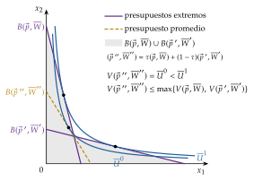
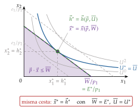
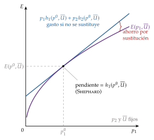
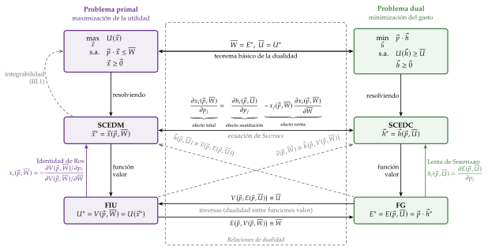
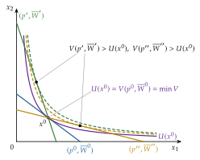
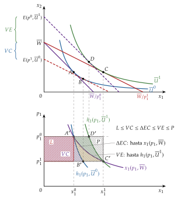
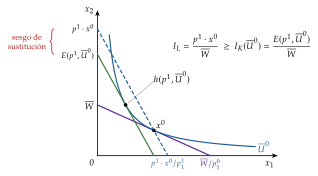

Tema 3.A.9
Teoría de la demanda del consumidor (II). Dualidad e integrabilidad de las preferencias. Sistemas de demanda utilizados en estudios empíricos. Medidas de cambio en el bienestar.
Introducción3 min
Enganche:
Cada mes de enero, las pensiones contributivas se revalorizan con la media de las tasas interanuales del IPC de los doce meses anteriores; en 2026 han subido un 2,7 % (Ministerio de Empleo y Seguridad Social 2015; Ministerio de Inclusión, Seguridad Social y Migraciones 2025). ¿Basta esa subida para que un pensionista quede igual que estaba? La pregunta parece de sentido común, pero no lo es: cuando los precios suben de forma desigual, el consumidor sustituye los bienes que se encarecen por otros, y lo que importa no es cuánto cuesta su cesta antigua, sino cuánto cuesta volver a estar igual de bien.
Para responderla hay que medir el bienestar en euros, y la utilidad es ordinal: no se puede restar ni sumar. Hace falta una herramienta que traduzca la utilidad a unidades monetarias. Esa herramienta es la función de gasto, que aparece cuando se «da la vuelta» al problema del consumidor: en lugar de maximizar la utilidad con una renta dada, se minimiza el gasto necesario para alcanzar una utilidad dada. Es la dualidad, el centro de esta exposición.
Relevancia:
Teórica: la dualidad da rigor y sencillez a la teoría de la demanda (la ecuación de Slutsky se demuestra en dos líneas), resuelve su principal limitación, que las preferencias no son observables, y cierra el círculo entre preferencias y demanda (integrabilidad).
Empírica: los sistemas completos de demanda, que se especifican a partir de una función de gasto o de una función indirecta de utilidad, son la herramienta con la que se estiman las elasticidades que necesitan la imposición indirecta [ver tema 4.B.11], la construcción de índices de precios [ver tema 4.A.1] o la medición de la pobreza.
Normativa: las variaciones compensatoria y equivalente son la base del análisis coste-beneficio [ver tema 4.B.6] y de la medición del exceso de gravamen de los impuestos [ver tema 4.B.9].
Contextualización:
La teoría de la demanda construida a partir de las preferencias, con el problema primal de maximización de la utilidad, se ha estudiado en [ver tema 3.A.8], junto con la historia del paso de la utilidad cardinal a la ordinal. Esta exposición la completa con cuatro líneas de trabajo que tienen un origen distinto:
Dualidad. Hotelling (1932) obtiene las demandas y ofertas de la empresa derivando su función de beneficio; Hicks (1939) introduce la demanda compensada; Roy (1947) obtiene las demandas a partir de la función indirecta de utilidad; Shephard (1953) deriva las demandas condicionadas de factores de la función de costes, y McKenzie (1957) traslada el resultado al consumidor con la función de gasto, «sin índice de utilidad». Uzawa (1964) y Diewert (1974) la convierten en un método general, que hoy es la forma habitual de trabajar con la demanda.
Integrabilidad. Antonelli (1886), un ingeniero de Pisa, plantea el camino inverso: recuperar la utilidad a partir de las demandas. Hurwicz y Uzawa (1971) dan la respuesta general. La vía alternativa, la preferencia revelada de Samuelson (1938, 1948) y Houthakker (1950), se une a la anterior con Kihlstrom, Mas-Colell y Sonnenschein (1976), que relacionan sus axiomas con las propiedades de la matriz de Slutsky [ver tema 3.A.8].
Medición del bienestar. Dupuit (1844) introduce el excedente del consumidor para evaluar obras públicas y Marshall (1890) lo formaliza como el área bajo la curva de demanda. Hicks (1939, 1941, 1943) lo reconstruye con curvas de indiferencia y define las variaciones compensatoria y equivalente, y Willig (1976) muestra cuándo el excedente marshalliano es una buena aproximación de ambas. El índice verdadero de coste de la vida es de Konüs, que lo propuso en 1924 (Konüs 1939).
Sistemas de demanda. Desde el sistema lineal de gasto de Stone (1954) hasta el sistema casi ideal (AIDS) de Deaton y Muellbauer (1980a), la estimación de la demanda se apoya en la dualidad: se parte de una función de gasto o de utilidad indirecta y las demandas se obtienen derivando. Angus Deaton recibió el Premio Nobel de Economía en 2015 «por su análisis del consumo, la pobreza y el bienestar» (The Nobel Prize 2015), y los sistemas de demanda son una parte central de esa obra.
En sentido estricto, dual designa la relación entre maximizar la utilidad con una restricción de renta y minimizar el gasto con una restricción de utilidad: se intercambian la función objetivo y la restricción. En sentido amplio se aplica a cualquier par de problemas o funciones formalmente parecidos salvo por el papel invertido de objetivo y restricción, de cantidades y precios o de máximo y mínimo (Mas-Colell, Whinston y Green 1995; Blume 2008). Aquí se usa en sentido estricto, aunque alguna vez aparezca el amplio.1
Problemática (preguntas clave):
¿Qué se gana al «dar la vuelta» al problema del consumidor y minimizar el gasto en lugar de maximizar la utilidad? ¿Se llega a la misma decisión?
¿Cómo se estiman en la práctica los sistemas de demanda?
¿Qué demandas observadas son compatibles con la maximización de unas preferencias y cómo pueden recuperarse estas a partir de aquellas?
¿Cómo se mide en unidades monetarias lo que gana o pierde un consumidor cuando cambian los precios, y qué error se comete con el excedente del consumidor o con los índices de precios?
Estructura: la exposición se organiza en tres partes.
I. Análisis teórico de la dualidad: partiremos de los ingredientes comunes a los dos enfoques (I.1); plantearemos el problema primal, que resumimos, y el dual, la minimización del gasto, con su demanda hicksiana, su función de gasto y el lema de Shephard (I.2), y estableceremos las relaciones de dualidad entre ambos (I.3).
II. Desarrollos empíricos: veremos para qué se estiman los sistemas completos de demanda (II.1) y los pasos que sigue la literatura, desde la elección de la forma funcional (de la Cobb-Douglas y el sistema lineal de gasto hasta el AIDS de Deaton y Muellbauer) hasta los datos y los contrastes (II.2), y los valoraremos (II.3).
III. Aplicaciones de la dualidad: la integrabilidad de las preferencias, que pregunta cuándo un sistema de demandas procede de unas preferencias (III.1); la ecuación de Slutsky y la clasificación de los bienes en sustitutivos y complementarios netos y brutos (III.2), y la medición de los cambios en el bienestar, con la métrica monetaria, las variaciones compensatoria y equivalente, el excedente del consumidor y los índices de coste de la vida (III.3).
El orden va de las herramientas a su uso. La integrabilidad se estudia después de los sistemas de demanda porque responde a la pregunta que estos dejan abierta: si lo que se estima puede proceder de un consumidor racional.
3.A.9. Teoría de la demanda del consumidor (II)
Introducción
I. Análisis teórico de la dualidad
1. Ingredientes comunes
2. Primal (max \(U\)) y dual (min \(p\cdot x\)): \(h(p,\overline{U})\), \(E(p,\overline{U})\)
3. Relaciones de dualidad (Roy, Shephard)
II. Sistemas completos de demanda
1. Idea
2. Pasos: forma funcional (LES, translog, AIDS), sistema, datos, estimación
3. Valoración
III. Aplicaciones de la dualidad
1. Integrabilidad (Antonelli; Hurwicz y Uzawa)
2. Ecuación de Slutsky y clasificación de los bienes
3. Bienestar: \(\Delta\mathrm{EC}\), métrica monetaria, VC, VE, índices
Conclusión
La exposición va de las herramientas (I) a su estimación (II) y a sus aplicaciones (III). Reparto orientativo del cante: I, 7 minutos (I.1, 1; I.2, 3,5; I.3, 2,5); II, 5 (II.1, 0,5; II.2, 3,5; II.3, 1); III, 12 (III.1, 3; III.2, 2,5; III.3, 6,5). Los gráficos imprescindibles son el doble primal-dual, el esquema de dualidad, el de la VC, el \(\Delta\mathrm{EC}\) y la VE, y el del índice de Konüs frente al de Laspeyres. Las condiciones de Kuhn-Tucker, las propiedades de la función indirecta de utilidad una a una, la translog, la recuperación de la utilidad y la ordenación de las medidas de bienestar con las de Laspeyres y Paasche son de profundización (anexos). Conviene escribir este esquema en la pizarra al empezar.
I. Análisis teórico de la dualidad en la decisión de consumo7 min
En el cante: los ingredientes, en una frase con remisión al primal (1 minuto); el primal, solo planteado, y el dual, desarrollado: planteamiento, tangencia, demanda hicksiana y función de gasto con sus propiedades clave y el lema de Shephard (3,5), y las relaciones de dualidad con el esquema (2,5). Se dibujan el gráfico doble (gráfico 2) y el esquema de dualidad (gráfico 4), que es el gráfico central del bloque. Kuhn-Tucker, las condiciones de segundo orden (anexo A) y la cuasiconvexidad de la función indirecta de utilidad (gráfico 1) son de profundización.
Este bloque responde a la primera pregunta. Su conclusión anticipada: maximizar la utilidad con una renta dada y minimizar el gasto necesario para alcanzar una utilidad dada llevan a la misma cesta, y de esa equivalencia salen unas relaciones entre funciones que permiten pasar de unas a otras sin volver a resolver ningún problema.
I.1. Ingredientes comunes del problema primal y el problema dual
Para modelizar al consumidor caben dos enfoques del mismo problema:
el enfoque primal toma los recursos como dados (restricción presupuestaria) y busca la combinación de bienes que da la mayor utilidad (función objetivo): es el problema de maximización de la utilidad;
el enfoque dual «da la vuelta» al anterior: fija un nivel de utilidad, que pasa a ser la restricción, y busca la combinación de bienes que lo alcanza con el menor gasto posible, que pasa a ser la función objetivo: es el problema de minimización del gasto.
Ambos parten de los mismos ingredientes [ver tema 3.A.8]: un conjunto de elección \(S=\mathbb{R}^n_+\); unas preferencias completas, reflexivas, transitivas, continuas, localmente insaciables y estrictamente convexas, representables por una función de utilidad \(U(x)\) continua, creciente y estrictamente cuasicóncava, y unos precios \(p\gg 0\) que el consumidor toma como dados. Los supuestos son también los mismos: contexto estático y sin incertidumbre, información perfecta, bienes homogéneos y consumidor precio-aceptante. Lo único que cambia es qué se toma como objetivo y qué como restricción (tabla 1): la utilidad es el objetivo del primal y la restricción del dual, y el gasto, la restricción del primal y el objetivo del dual.
| Problema primal | Problema dual | |
|---|---|---|
| Función objetivo | utilidad \(U(x)\) (se maximiza) | gasto \(p\cdot x\) (se minimiza) |
| Restricción | presupuestaria: \(p\cdot x\leq\overline{W}\) | de utilidad: \(U(x)\geq\overline{U}\) |
| Parámetros | precios \(p\) y renta \(\overline{W}\) | precios \(p\) y utilidad \(\overline{U}\) |
| Solución | demanda marshalliana \(x(p,\overline{W})\) | demanda hicksiana \(h(p,\overline{U})\) |
| Función valor | función indirecta de utilidad \(V(p,\overline{W})\) | función de gasto \(E(p,\overline{U})\) |
Fuente: elaboración propia basada en Mas-Colell, Whinston y Green (1995, cap. 3) y Maté García y Pérez Domínguez (2007).
I.2. Problemas primal y dual
I.2.1. Problema primal: maximización de la utilidad
Idea: conjugar unas necesidades ilimitadas con unos recursos escasos. El problema primal, desarrollado en [ver tema 3.A.8], se resume aquí porque es el punto de partida de la dualidad.
El problema de maximización de la utilidad (PMU) es \[\max_{x}\ U(x)\quad\text{s.a.}\quad p\cdot x\leq\overline{W},\quad x\geq 0. \tag{1}\] Las condiciones de existencia, unicidad y suficiencia son las del PMU [ver tema 3.A.8]. Con la lagrangiana \(\mathcal{L}=U(x)+\lambda\,(\overline{W}-p\cdot x)\), en una solución interior las condiciones de Kuhn-Tucker dan \[\frac{U_1}{p_1}=\dots=\frac{U_n}{p_n}=\lambda,\qquad RMS_{12}=\frac{U_1}{U_2}=\frac{p_1}{p_2}, \tag{2}\] donde \(\lambda>0\) es la utilidad marginal de la renta: la curva de indiferencia más alta alcanzable es tangente a la recta de balance (gráfico 2, panel izquierdo). Las condiciones completas, con la solución de esquina, y las de segundo orden están en el anexo A; la solución de esquina se estudia en [ver tema 3.A.8].
La solución es la demanda marshalliana (también llamada ordinaria o walrasiana) \(x(p,\overline{W})\): homogénea de grado cero en \((p,\overline{W})\) (no hay ilusión monetaria) y con la restricción saturada, \(p\cdot x(p,\overline{W})=\overline{W}\) (ley de Walras), por la insaciabilidad local.
Su función valor es la función indirecta de utilidad (FIU), la utilidad máxima que se alcanza con unos precios y una renta, \[V(p,\overline{W})=U\big(x(p,\overline{W})\big). \tag{3}\] Es continua, homogénea de grado cero en \((p,\overline{W})\), estrictamente creciente en \(\overline{W}\), no creciente en \(p\) y cuasiconvexa en \((p,\overline{W})\),2 y de ella se obtienen las demandas derivando, con la identidad de Roy (Roy 1947): \[x_i(p,\overline{W})=-\frac{\partial V(p,\overline{W})/\partial p_i}{\partial V(p,\overline{W})/\partial\overline{W}},\qquad i=1,\dots,n. \tag{4}\] La demostración, con el teorema de la envolvente, está en el anexo B.
Como \(V\) se mide en «útiles», que solo ordenan, no sirve por sí sola para cuantificar cambios de bienestar. Cabe entonces preguntarse: si con los mismos ingredientes se da la vuelta al problema y se minimiza el gasto necesario para alcanzar un nivel de utilidad, ¿se llega al mismo equilibrio? Responder a esta pregunta, en apariencia inocente, descubre una serie de relaciones entre los dos enfoques que enriquecen mucho la teoría de la demanda.

Fuente: elaboración propia basada en Mas-Colell, Whinston y Green (1995, fig. 3.D.5).
I.2.2. Problema dual: minimización del gasto
Idea y supuestos
En lugar de preguntar cuánta utilidad compra una renta, preguntamos cuál es la forma más barata de alcanzar un nivel de utilidad. Los supuestos son los mismos que en el primal: solo cambia la formulación del problema.
Desarrollo analítico
El problema de minimización del gasto (PMG) es \[\min_{x}\ p\cdot x\quad\text{s.a.}\quad U(x)\geq\overline{U},\quad x\geq 0, \tag{5}\] con \(\overline{U}>U(0)\) y \(p\gg 0\): se busca alcanzar al menos el nivel de utilidad \(\overline{U}\) de la forma más barata posible. La variable de elección es la cesta \(x\), igual que en el primal; su solución será la demanda \(h(p,\overline{U})\). Existe solución: aunque el conjunto \(\{x: U(x)\geq\overline{U}\}\) no está acotado, basta buscarla entre las cestas que no cuestan más que una cesta cualquiera que alcance \(\overline{U}\), que forman un conjunto compacto (Mas-Colell, Whinston y Green 1995, prop. 3.E.1).
Como hay restricciones de desigualdad, se resuelve con el método de Kuhn-Tucker, a partir de la lagrangiana \[\mathcal{L}=p\cdot x+\lambda^{E}\big(\overline{U}-U(x)\big). \tag{6}\]
En una solución interior, las condiciones de primer orden dan \[\frac{p_1}{U_1}=\dots=\frac{p_n}{U_n}=\lambda^{E},\qquad RMS_{12}=\frac{U_1}{U_2}=\frac{p_1}{p_2}: \tag{7}\] la misma condición de tangencia que en el primal (las condiciones completas de los dos problemas, lado a lado, están en el anexo A).
El multiplicador \(\lambda^{E}\) es el coste marginal de la utilidad: por el teorema de la envolvente, \(\lambda^{E*}=\partial E(p,\overline{U})/\partial\overline{U}\). En la cesta común a los dos problemas, \(\lambda^{E*}=1/\lambda^*\): si una unidad monetaria más compra \(\lambda^*\) útiles, un útil más cuesta \(1/\lambda^*\) unidades monetarias.3
La restricción se satura, \(U(x^*)=\overline{U}\), por la continuidad de \(U\): si sobrara utilidad, podría reducirse un poco la cantidad de algún bien comprado y gastar menos sin bajar de \(\overline{U}\) (Mas-Colell, Whinston y Green 1995, prop. 3.E.3). Con preferencias estrictamente convexas se cumplen las condiciones de segundo orden, que son las mismas que en el primal (anexo A).
Desarrollo gráfico
El gráfico procede al revés que el del primal (gráfico 2, panel derecho): se dibuja la curva de indiferencia del nivel exigido, \(\overline{U}\), que queda fija; se trazan las rectas isogasto \(p\cdot x=e\), paralelas entre sí, que unen las cestas con el mismo gasto, y se desplazan hacia el origen hasta la más baja que toca la curva. El equilibrio está en la tangencia: la isogasto más baja que alcanza \(\overline{U}\).

Fuente: elaboración propia basada en Maté García y Pérez Domínguez (2007) y Mas-Colell, Whinston y Green (1995, fig. 3.E.1).
Solución: la demanda compensada o hicksiana
La solución del PMG es la cesta más barata que da \(\overline{U}\). Como sus cantidades pueden expresarse en función de los parámetros, se obtiene el sistema completo de ecuaciones de demanda compensada o hicksiana (SCEDC): \[h(p,\overline{U})=\begin{pmatrix} h_1(p_1,\dots,p_n,\overline{U})\\ \vdots\\ h_n(p_1,\dots,p_n,\overline{U})\end{pmatrix}. \tag{8}\] Se llama compensada porque, cuando cambian los precios, el gasto se ajusta para mantener constante la utilidad: el consumidor recibe justo la compensación que necesita para seguir en \(\overline{U}\).
Sus propiedades (Mas-Colell, Whinston y Green 1995, prop. 3.E.3 y 3.E.4):
es única, con preferencias estrictamente convexas, y continua;
es homogénea de grado cero en \(p\): \(h(kp,\overline{U})=h(p,\overline{U})\) para todo \(k>0\); si todos los precios se multiplican por \(k\), la cesta más barata que da \(\overline{U}\) no cambia;
no hay exceso de utilidad: \(U\big(h(p,\overline{U})\big)=\overline{U}\);
cumple la ley de la demanda compensada: \((p'-p)\cdot\big(h(p',\overline{U})-h(p,\overline{U})\big)\leq 0\) y, en particular, \(\partial h_i/\partial p_i\leq 0\). Precio y cantidad compensada nunca se mueven en el mismo sentido: un bien Giffen es imposible en la demanda hicksiana.4 Es la diferencia fundamental con la demanda marshalliana, y se debe a la concavidad de la función de gasto, como veremos enseguida.
Su gran inconveniente es que no es observable: depende de \(\overline{U}\), que no se ve, y no puede estimarse directamente. La dualidad (I.3) y la ecuación de Slutsky (III.2) permiten recuperar sus derivadas a partir de la demanda marshalliana, que sí se observa.
Función valor: la función de gasto
Sustituyendo la demanda hicksiana en la función objetivo se obtiene la función de gasto (FG): el gasto mínimo necesario para alcanzar \(\overline{U}\) a los precios \(p\), \[E(p,\overline{U})=p\cdot h(p,\overline{U})=\min_{x}\left\{p\cdot x\ :\ U(x)\geq\overline{U},\ x\geq 0\right\}. \tag{9}\] Es el concepto central de la exposición: mide la utilidad en unidades monetarias. Sus propiedades (Mas-Colell, Whinston y Green 1995, prop. 3.E.2):
es continua en \((p,\overline{U})\);
es homogénea de grado uno en \(p\): si todos los precios se multiplican por \(k>0\), la cesta óptima no cambia y su coste se multiplica por \(k\);
es estrictamente creciente en \(\overline{U}\) y no decreciente en cada \(p_i\) (estrictamente creciente en los precios de los bienes que se consumen; en una solución de esquina, la subida del precio de un bien que no se compra no altera el gasto);
es cóncava en \(p\). Si los precios pasan de \(p\) a \(p'\) y el consumidor mantuviera la cesta inicial \(h(p,\overline{U})\), su gasto variaría linealmente con los precios, \(p'\cdot h(p,\overline{U})\). Como puede reoptimizar y sustituir los bienes que se encarecen por los que se abaratan, gasta como mucho eso: \[E(p',\overline{U})\leq p'\cdot h(p,\overline{U})=E(p,\overline{U})+h(p,\overline{U})\cdot(p'-p). \tag{10}\] La función de gasto queda siempre por debajo de su plano tangente, y eso es la concavidad (gráfico 3). No significa que el gasto suba menos que proporcionalmente cuando suben todos los precios en la misma proporción (entonces sube exactamente en esa proporción, por la propiedad 2), sino que, cuando cambian los precios relativos, la sustitución abarata la cesta respecto a la inicial;
cumple el lema de Shephard (Shephard 1953; McKenzie 1957): si \(E\) es diferenciable en \(p\), \[h_i(p,\overline{U})=\frac{\partial E(p,\overline{U})}{\partial p_i},\qquad i=1,\dots,n. \tag{11}\] Las demandas hicksianas se obtienen derivando la función de gasto. Intuición: si \(p_i\) sube un euro, la cesta óptima apenas cambia en primer orden (teorema de la envolvente) y el gasto sube \(h_i\) euros. La demostración está en el anexo B.
De las propiedades 4 y 5 se sigue la matriz de Slutsky o de sustitución: la matriz hessiana de \(E\) respecto a los precios, es decir, de primeras derivadas de las demandas hicksianas y segundas de la función de gasto, \[S(p,\overline{U})=\big[S_{ij}\big]=D^2_pE(p,\overline{U}),\qquad S_{ij}=\frac{\partial h_i(p,\overline{U})}{\partial p_j}=\frac{\partial^2E(p,\overline{U})}{\partial p_j\,\partial p_i}. \tag{12}\]
Es simétrica, \(S_{ij}=S_{ji}\), porque el orden de derivación de \(E\) no importa (teorema de Schwarz o de Young): los efectos cruzados de los precios sobre las demandas hicksianas son iguales para cualquier par de bienes, a diferencia de lo que ocurre con las marshallianas.
Es semidefinida negativa, porque \(E\) es cóncava; en particular, los elementos de su diagonal son no positivos, \(S_{ii}=\partial h_i/\partial p_i\leq 0\), que es la ley de la demanda compensada.
Cumple \(S(p,\overline{U})\,p=0\), por la homogeneidad de grado cero de \(h\) (teorema de Euler). Sus propiedades se explotan en el apartado III.2.

Fuente: elaboración propia basada en Mas-Colell, Whinston y Green (1995, fig. 3.E.3).
Las propiedades de los dos problemas forman pares duales (tabla 2): cada propiedad de la demanda marshalliana y de la FIU tiene su correspondiente en la demanda hicksiana y la función de gasto.
| Primal: \(x(p,\overline{W})\) y \(V(p,\overline{W})\) | Dual: \(h(p,\overline{U})\) y \(E(p,\overline{U})\) |
|---|---|
| \(x\) homogénea de grado 0 en \((p,\overline{W})\) | \(h\) homogénea de grado 0 en \(p\) |
| Ley de Walras: \(p\cdot x(p,\overline{W})=\overline{W}\) | No exceso de utilidad: \(U\big(h(p,\overline{U})\big)=\overline{U}\) |
| \(V\) homogénea de grado 0 en \((p,\overline{W})\) | \(E\) homogénea de grado 1 en \(p\) |
| \(V\) estrictamente creciente en \(\overline{W}\) y no creciente en \(p\) | \(E\) estrictamente creciente en \(\overline{U}\) y no decreciente en \(p\) |
| \(V\) cuasiconvexa en \((p,\overline{W})\) | \(E\) cóncava en \(p\) |
| Identidad de Roy: \(x_i=-\dfrac{\partial V/\partial p_i}{\partial V/\partial\overline{W}}\) | Lema de Shephard: \(h_i=\dfrac{\partial E}{\partial p_i}\) |
Matriz de Slutsky: \(S=\big[\partial h_i/\partial p_j\big]=D^2_pE(p,\overline{U})\), simétrica y semidefinida negativa, con \(S\,p=0\). Fuente: elaboración propia basada en Mas-Colell, Whinston y Green (1995, prop. 3.D.2, 3.D.3, 3.E.2, 3.E.3 y 3.G.1).
Recapitulación: el problema dual tiene la misma condición de tangencia que el primal y produce dos funciones nuevas, la demanda hicksiana, que no es observable pero cumple siempre la ley de la demanda, y la función de gasto, que mide la utilidad en dinero y de la que se obtienen las demandas hicksianas derivando. Falta ver cómo se relacionan con las del primal.
I.3. Relaciones de dualidad
Como los dos problemas tienen los mismos ingredientes, entre ellos se dan unas relaciones de dualidad que afectan a las soluciones (las cestas), a las funciones de demanda y a las funciones valor.
Dualidad entre soluciones: el teorema básico de la dualidad
Teorema básico de la dualidad (Mas-Colell, Whinston y Green 1995, prop. 3.E.1). Con \(U\) continua, preferencias localmente insaciables y \(p\gg 0\):
si \(x^*\) resuelve el PMU con renta \(\overline{W}>0\), entonces resuelve el PMG con \(\overline{U}=U(x^*)\), y el gasto mínimo es exactamente \(\overline{W}\);
si \(h^*\) resuelve el PMG con \(\overline{U}>U(0)\), entonces resuelve el PMU con renta \(\overline{W}=p\cdot h^*\), y la utilidad máxima es exactamente \(\overline{U}\).
Es decir, con el intercambio de información adecuado (\(\overline{W}=E^*\), \(\overline{U}=U^*\)), los dos problemas dan la misma cesta: en el gráfico 2, la recta de balance del primal es la isogasto tangente del dual y la curva de indiferencia alcanzada en el primal es la curva exigida en el dual.
El resultado se refiere a las cestas óptimas, no a las funciones: la demanda marshalliana y la hicksiana son funciones distintas, porque dependen de variables distintas (\(\overline{W}\) y \(\overline{U}\)). Pero del teorema se derivan dos pares de relaciones entre ellas.
Dualidad entre funciones valor y entre funciones de demanda
Para cualesquiera \(p\gg 0\), \(\overline{W}>0\) y \(\overline{U}>U(0)\) se cumplen cuatro identidades: \[E\big(p,V(p,\overline{W})\big)=\overline{W},\qquad V\big(p,E(p,\overline{U})\big)=\overline{U}, \tag{13}\] \[x(p,\overline{W})=h\big(p,V(p,\overline{W})\big),\qquad h(p,\overline{U})=x\big(p,E(p,\overline{U})\big). \tag{14}\]
Entre funciones valor: para unos precios dados, la FIU y la FG son inversas respecto a su segundo argumento: a cada utilidad máxima le corresponde un gasto mínimo, y viceversa. Hallada una de ellas, la otra se obtiene despejando, sin resolver su problema.5
Entre funciones de demanda: la marshalliana se obtiene de la hicksiana sustituyendo la utilidad por la FIU, y la hicksiana de la marshalliana sustituyendo la renta por la FG. Es la extensión natural del teorema básico a las funciones de demanda.
Ejemplo (Cobb-Douglas, \(U=x_1^{\alpha}x_2^{1-\alpha}\), cuyas demandas se derivan en [ver tema 3.A.8]): \(x_1=\alpha\overline{W}/p_1\) y \(V(p,\overline{W})=\overline{W}\,\big(\tfrac{\alpha}{p_1}\big)^{\alpha}\big(\tfrac{1-\alpha}{p_2}\big)^{1-\alpha}\). Invirtiendo, \(E(p,\overline{U})=\overline{U}\,\big(\tfrac{p_1}{\alpha}\big)^{\alpha}\big(\tfrac{p_2}{1-\alpha}\big)^{1-\alpha}\) y, por Shephard, \(h_1=\alpha E/p_1\): la misma forma que la marshalliana, con el gasto en lugar de la renta.
Esquema de dualidad
Todas estas relaciones se resumen en el gráfico 4: para obtener las cuatro funciones (dos demandas y dos funciones valor) basta resolver uno de los dos problemas; las demás se obtienen con las identidades de Roy y Shephard y con las relaciones de dualidad.

Fuente: elaboración propia a partir de Maté García y Pérez Domínguez (2007).
Maximizar la utilidad con una renta y minimizar el gasto con una utilidad son el mismo problema visto desde dos lados. Su valor está en las funciones que produce: la función de gasto mide la utilidad en dinero, sus derivadas son las demandas compensadas (Shephard) y su concavidad da la ley de la demanda compensada.
Recapitulación: basta resolver uno de los dos problemas para obtener las cuatro funciones. Las flechas del esquema son, además, las herramientas del resto de la exposición: la ecuación de Slutsky sale de derivar \(h_i(p,\overline{U})=x_i\big(p,E(p,\overline{U})\big)\) (III.2); la integrabilidad recorre el esquema en sentido contrario, de \(x\) a \(E\) y de \(E\) a \(U\) (III.1), y la medida del bienestar usa \(E\) para traducir la utilidad a unidades monetarias (III.3). Antes, en el apartado II, veremos cómo se estima en la práctica la caja de la que parte todo: el sistema de demandas \(x(p,\overline{W})\).
II. Desarrollos empíricos: estimación de sistemas completos de ecuaciones de demanda5 min
En el cante: la idea (0,5 minutos); las formas funcionales con las ecuaciones del sistema lineal de gasto y del AIDS (con sus restricciones de homogeneidad, simetría y agregación) y el resto de los pasos (3,5), y la valoración (1). La translog, el modelo de Rotterdam, el QUAIDS (basta nombrarlo) y los detalles econométricos son de profundización.
Este bloque responde a la segunda pregunta. Su conclusión anticipada: la dualidad permite elegir una función de gasto o de utilidad indirecta flexible, derivar de ella demandas estimables y contrastar las restricciones de la teoría. El sistema casi ideal (AIDS) de Deaton y Muellbauer es el punto de equilibrio entre flexibilidad, coherencia con la teoría, agregación y sencillez.
II.1. Idea
Un sistema completo de ecuaciones de demanda explica a la vez el gasto en todos los bienes (o grupos de bienes) de un consumidor representativo o de una muestra de hogares, en función de los precios y del gasto total, con una forma funcional derivada de un problema de optimización. Se estima para tres fines (Deaton y Muellbauer 1980b, cap. 1):
medir: las elasticidades-renta y precio, propias y cruzadas, que necesitan la política fiscal (imposición indirecta, reformas del IVA [ver tema 4.B.11]), los índices de precios o el análisis de la pobreza (Deaton 1997);
contrastar la teoría: la homogeneidad, la simetría y la negatividad pasan a ser restricciones sobre los parámetros, es decir, se contrasta si la demanda observada es integrable (III.1);
valorar el bienestar: si el sistema procede de una función de gasto conocida, las variaciones compensatoria y equivalente se calculan directamente (III.3).
La dualidad es lo que lo hace practicable: en lugar de especificar una utilidad directa y resolver el PMU, se especifica una función de gasto o una función indirecta de utilidad y las demandas se obtienen derivando, por Shephard o por Roy, sin resolver ningún problema de optimización.
Un buen sistema debe cumplir cuatro requisitos, que tiran en direcciones opuestas (Deaton y Muellbauer 1980a):
coherencia con la teoría: poder imponer o contrastar sus restricciones;
flexibilidad: no fijar de antemano las elasticidades (formalmente, aproximar en primer orden cualquier sistema de demanda);
agregación: que la demanda media de muchos hogares distintos tenga la misma forma que la individual [ver tema 3.A.8];
sencillez de estimación: a ser posible, linealidad en los parámetros.
II.2. Pasos que sigue la literatura
La estimación sigue cinco pasos, que reproducen el camino de la teoría, de las preferencias a la demanda: (1) elegir una forma funcional, (2) especificar un sistema completo, (3) reunir los datos, (4) especificar el modelo econométrico y (5) estimar y contrastar.
II.2.1. Elección de una función de referencia apropiada
Gracias a la dualidad, la forma funcional puede ponerse en la utilidad directa, en la FIU (y obtener las demandas por Roy) o en la función de gasto (y obtenerlas por Shephard). Así el sistema es coherente con la maximización por construcción. La elección es un compromiso entre sencillez y flexibilidad: las formas más fáciles de manejar son las más rígidas, porque predeterminan los resultados (tabla 3).
Cobb-Douglas6: \(U(x)=\sum_i\alpha_i\ln x_i\), con \(\alpha_i>0\) y \(\sum_i\alpha_i=1\) (normalización que no cambia las preferencias). Da participaciones constantes en el gasto, \(s_i=p_ix_i/\overline{W}=\alpha_i\), es decir, \[\ln x_i=\ln\alpha_i+\ln\overline{W}-\ln p_i, \tag{15}\] lineal en logaritmos y trivial de estimar (las demandas se derivan en [ver tema 3.A.8]). Pero es demasiado rígida: todas las elasticidades-renta valen uno, las elasticidades-precio propias, \(-1\), las cruzadas, cero, y la elasticidad de sustitución, uno. Al ser homotética, la parte del gasto dedicada a cada bien no cambia con la renta, de modo que no recoge la ley de Engel.
Sistema lineal de gasto (LES), de la utilidad de Stone-Geary, \(U(x)=\sum_i\alpha_i\ln(x_i-\gamma_i)\), con \(\alpha_i>0\), \(\sum_i\alpha_i=1\) y \(x_i>\gamma_i\) (Klein y Rubin 1947; Geary 1950; Stone 1954): \[p_ix_i=p_i\gamma_i+\alpha_i\Big(\overline{W}-\sum_jp_j\gamma_j\Big). \tag{16}\]
El consumidor compra primero unas cantidades mínimas o de subsistencia, \(\gamma_i\), y reparte la renta restante (supernumeraria) en proporciones fijas \(\alpha_i\). El gasto en cada bien es lineal en los precios y en la renta, y las curvas de Engel son rectas que no pasan por el origen, de modo que distingue bienes necesarios y de lujo.
Es sencillo de manejar, en la teoría y en la econometría, y fue el primer sistema completo estimado con datos reales (Stone, para el Reino Unido).
Su límite: las preferencias son aditivas, de modo que no admite bienes inferiores (porque \(\alpha_i>0\)) ni complementarios netos, y las elasticidades-precio quedan prácticamente ligadas a las elasticidades-renta, algo que los datos rechazan (Deaton 1974).
Modelo de Rotterdam (Barten 1964; Theil 1965): no parte de una utilidad concreta, sino de la ecuación de Slutsky en diferencias logarítmicas, \[\bar s_i\,d\ln x_i=b_i\,d\ln Q+\sum_jc_{ij}\,d\ln p_j,\qquad d\ln Q\equiv\sum_k\bar s_k\,d\ln x_k, \tag{17}\] donde \(\bar s_i\) es la participación media en el gasto, \(b_i=p_i\,\partial x_i/\partial\overline{W}\) es la propensión marginal a gastar en el bien \(i\) y \(c_{ij}=p_ip_jS_{ij}/\overline{W}\) son los términos de Slutsky en participaciones. La teoría se traduce en restricciones lineales sobre los parámetros, que se imponen o contrastan directamente: \(\sum_ib_i=1\) y \(\sum_ic_{ij}=0\) (agregación), \(\sum_jc_{ij}=0\) (homogeneidad), \(c_{ij}=c_{ji}\) (simetría) y \([c_{ij}]\) semidefinida negativa. Su límite es que, al tomar \(b_i\) y \(c_{ij}\) como constantes, es una aproximación local, sin una función de gasto explícita con la que valorar el bienestar.
Translog (transcendental logarithmic) de Christensen, Jorgenson y Lau (1975): una aproximación de segundo orden, en logaritmos, a una función cualquiera. Se estima en su versión indirecta, \[\ln V(p,\overline{W})=\alpha_0+\sum_i\alpha_i\ln\frac{p_i}{\overline{W}}+\frac12\sum_i\sum_j\beta_{ij}\ln\frac{p_i}{\overline{W}}\ln\frac{p_j}{\overline{W}},\qquad\beta_{ij}=\beta_{ji}, \tag{18}\] de la que la identidad de Roy en logaritmos, \(s_i=-\dfrac{\partial\ln V/\partial\ln p_i}{\partial\ln V/\partial\ln\overline{W}}\), da las participaciones \[s_i=\frac{\alpha_i+\sum_j\beta_{ij}\ln(p_j/\overline{W})}{\sum_k\alpha_k+\sum_k\sum_j\beta_{kj}\ln(p_j/\overline{W})}. \tag{19}\] Es muy flexible y condiciona poco los resultados, pero las participaciones no son lineales en los parámetros (hay que normalizarlos, por ejemplo con \(\sum_k\alpha_k=-1\), y estimar por métodos no lineales) y la concavidad no está garantizada lejos del punto de aproximación.
Sistema casi ideal de demanda (AIDS, Almost Ideal Demand System) de Deaton y Muellbauer (1980a). Parte de una función de gasto de la clase PIGLOG (price-independent generalized logarithmic), la que Muellbauer (1975, 1976) identificó como compatible con la agregación [ver tema 3.A.8]: \[\ln E(p,\overline{U})=(1-\overline{U})\ln a(p)+\overline{U}\ln b(p), \tag{20}\] con \[\ln a(p)=\alpha_0+\sum_k\alpha_k\ln p_k+\frac12\sum_k\sum_j\gamma^*_{kj}\ln p_k\ln p_j,\qquad \ln b(p)=\ln a(p)+\beta_0\prod_kp_k^{\beta_k},\] donde \(a(p)\) es el coste de la subsistencia (\(\overline{U}=0\)) y \(b(p)\), el de la saciedad (\(\overline{U}=1\)). Por Shephard en logaritmos, \(s_i=\partial\ln E/\partial\ln p_i\), y sustituyendo \(\overline{U}\) por la FIU que se obtiene al despejar \(E=\overline{W}\), salen las participaciones \[s_i=\alpha_i+\sum_{j=1}^{n}\gamma_{ij}\ln p_j+\beta_i\ln\frac{\overline{W}}{P},\qquad\gamma_{ij}=\tfrac12\big(\gamma^*_{ij}+\gamma^*_{ji}\big), \tag{21}\] con \(\ln P=\ln a(p)\), un índice de precios translog.
Restricciones: agregación, \(\sum_i\alpha_i=1\), \(\sum_i\gamma_{ij}=0\) y \(\sum_i\beta_i=0\); homogeneidad, \(\sum_j\gamma_{ij}=0\); simetría, \(\gamma_{ij}=\gamma_{ji}\). Todas son lineales en los parámetros y fáciles de imponer o contrastar. La negatividad no se impone globalmente: se comprueba con los datos.
Curvas de Engel: la participación es lineal en \(\ln\overline{W}\), la forma de Working (1943) y Leser (1963). Si \(\beta_i>0\), el bien es de lujo y su peso en el gasto crece con la renta; si \(\beta_i<0\), es necesario y su peso cae, que es la ley de Engel.
Elasticidades (con \(\delta_{ij}=1\) si \(i=j\) y \(0\) si no): \[\varepsilon_{x_i,\overline{W}}=1+\frac{\beta_i}{s_i},\qquad \varepsilon_{x_i,p_j}=-\delta_{ij}+\frac{\gamma_{ij}-\beta_i\big(\alpha_j+\sum_k\gamma_{jk}\ln p_k\big)}{s_i},\qquad \varepsilon^{h}_{i,p_j}=\varepsilon_{x_i,p_j}+s_j\,\varepsilon_{x_i,\overline{W}}, \tag{22}\] la última por la ecuación de Slutsky en elasticidades (III.2).
Agregación exacta: por ser PIGLOG, la participación media de muchos hogares tiene la misma forma, evaluada en un gasto «representativo» que depende de la distribución del gasto (a través de un índice de desigualdad), sin exigir curvas de Engel rectas y paralelas.
Estimación: si \(P\) se aproxima por el índice de Stone, \(\ln P^*=\sum_ks_k\ln p_k\), el sistema (LA-AIDS, AIDS lineal aproximado) es lineal y se estima ecuación a ecuación por mínimos cuadrados.
Su nombre resume sus virtudes: aproxima en primer orden cualquier sistema de demanda, es coherente con la teoría y con la restricción presupuestaria, agrega exactamente y se estima con facilidad. Es «casi» ideal porque la negatividad no está garantizada y la forma de las curvas de Engel es restrictiva.
QUAIDS (AIDS cuadrático) de Banks, Blundell y Lewbel (1997): con microdatos británicos, las curvas de Engel de algunos bienes (ropa, alcohol) se curvan, y un bien puede ser de lujo para los hogares de renta baja y necesario para los de renta alta. Se añade un término cuadrático en el logaritmo del gasto: \[s_i=\alpha_i+\sum_j\gamma_{ij}\ln p_j+\beta_i\ln\frac{\overline{W}}{a(p)}+\frac{\vartheta_i}{b(p)}\Big[\ln\frac{\overline{W}}{a(p)}\Big]^2,\qquad b(p)=\prod_kp_k^{\beta_k},\quad\sum_i\vartheta_i=0. \tag{23}\] Es un sistema de «rango 3», el máximo que admiten los sistemas cuyas participaciones son lineales en funciones de la renta (Gorman 1981).
| Sistema | Punto de partida | Flexible | Agregación | Lineal en los parámetros | Límite principal |
|---|---|---|---|---|---|
| Cobb-Douglas | utilidad directa | no | sí (homotética) | sí (en logaritmos) | participaciones constantes |
| LES (Stone 1954) | utilidad directa | no | sí (forma polar de Gorman) | no | aditiva: sin inferiores ni complementarios netos |
| Rotterdam (Barten, Theil) | ecuación de Slutsky en diferencias | sí (local) | no | sí | sin función de gasto explícita |
| Translog (Christensen, Jorgenson y Lau 1975) | FIU | sí | no en general | no | estimación no lineal |
| AIDS (Deaton y Muellbauer 1980a) | función de gasto PIGLOG | sí | sí (exacta) | sí (LA-AIDS) | curvas de Engel lineales en \(\ln\overline{W}\) |
| QUAIDS (Banks, Blundell y Lewbel 1997) | función de gasto | sí | sí | no | más parámetros |
Fuente: elaboración propia a partir de Deaton y Muellbauer (1980b, caps. 3 y 5), Deaton y Muellbauer (1980a) y Banks, Blundell y Lewbel (1997).
II.2.2. Elaboración de un sistema de ecuaciones completo o exhaustivo
Como el consumidor decide a la vez cuánto gastar en todos los bienes, las demandas se estiman conjuntamente y deben recoger todo el gasto: \[x_i=x_i(p,\overline{W}),\quad i=1,\dots,n,\qquad\text{con}\quad \sum_{i=1}^{n}p_ix_i=\overline{W}, \tag{24}\] o, en participaciones en el gasto, \(s_i=s_i(p,\overline{W})\), con \(\sum_is_i=1\). Se suele trabajar en participaciones, porque la restricción presupuestaria (agregación) queda en la forma más simple.
Con cientos de bienes es imposible estimar todas las elasticidades cruzadas (del orden de \(n^2\) parámetros), así que hay que agrupar. La agrupación se justifica con la separabilidad débil de las preferencias y la presupuestación en dos etapas (Strotz 1957; Gorman 1959): si la RMS entre dos bienes de un grupo no depende de las cantidades de los bienes de otros grupos, el consumidor puede repartir primero su gasto entre grupos (alimentación, vivienda, transporte…) y después, dentro de cada grupo, en función solo del gasto del grupo y de sus precios. La segunda etapa exige solo separabilidad débil; que la primera pueda hacerse con un único índice de precios por grupo exige condiciones más fuertes (Gorman).
El nivel de agregación es otro compromiso: con muchas partidas se captan mejor las relaciones de sustitución, pero la estimación se complica; con pocas, al revés.
II.2.3. Muestra de datos
Hacen falta microdatos de una muestra representativa de hogares: su gasto en cada partida, su renta, sus características y los precios que pagan. En España la fuente es la Encuesta de Presupuestos Familiares (EPF) del INE: anual desde 2006, con unos 24.000 hogares y microdatos públicos. La última es la de 2025, con un gasto medio por hogar de 35.101 euros (Instituto Nacional de Estadística 2026d, 2008).
Lo más frecuente es un corte transversal. Si se quiere seguir a los mismos hogares en el tiempo (datos de panel), la EPF permite un panel corto, porque cada hogar colabora dos años seguidos. Su antecesora, la Encuesta Continua de Presupuestos Familiares (1985-2005), era trimestral y seguía a cada hogar durante ocho trimestres (Instituto Nacional de Estadística s. f., 2008).
El problema son los precios: en un corte transversal todos los hogares afrontan casi los mismos. Por eso se combinan varios años y regiones (con los índices de precios por subclases y comunidades autónomas) o se usan los valores unitarios (gasto entre cantidad), corrigiendo que reflejan también la calidad de lo comprado, como propone Deaton (1997) para las encuestas de los países en desarrollo.
II.2.4. Especificación econométrica del sistema de demanda
Cada ecuación relaciona la demanda o la participación en el gasto de un bien con los precios, el gasto total y los parámetros de la forma elegida, más una perturbación. Como las participaciones suman uno, las perturbaciones suman cero y su matriz de covarianzas es singular: se elimina una ecuación y se estiman las demás conjuntamente (por ecuaciones aparentemente no relacionadas o por máxima verosimilitud). Con máxima verosimilitud, el resultado no depende de la ecuación que se elimine (Barten 1969).
Otros problemas habituales: el gasto total es endógeno (se instrumenta con la renta); hay gastos nulos (censura) en los bienes que el hogar no compra durante el periodo de la encuesta, y hay que introducir variables demográficas, como el tamaño y la composición del hogar, por ejemplo trasladando o escalando los parámetros (Pollak y Wales 1981).
II.2.5. Resultados de las estimaciones
Se obtienen los parámetros y, con ellos, las elasticidades (ecuación (22) en el AIDS), con las que se analizan las pautas de consumo. Y se contrastan las restricciones que la forma funcional no impone, que son precisamente las condiciones de integrabilidad del apartado III.1.
La historia de estos contrastes resume la evolución del campo (Aguilar García y Mateos Bustamante 2015, 21-22):
con datos agregados de series temporales, las restricciones se rechazaron con frecuencia, sobre todo la homogeneidad: Barten (1967, 1969), con el modelo de Rotterdam y datos de los Países Bajos; Deaton (1974), con datos agregados del Reino Unido, y Deaton y Muellbauer (1980a), con su propio AIDS;
Deaton atribuyó estos rechazos a especificaciones demasiado rígidas, a la dinámica (hábitos, bienes duraderos, restricciones de crédito) y, sobre todo, a la agregación: la teoría es individual y los datos, medias de consumidores heterogéneos. De ahí la búsqueda de formas que agreguen bien, como la PIGLOG, y, después, el paso a los microdatos (Deaton y Muellbauer 1980b);
con microdatos, formas flexibles y variables demográficas, el panorama es más favorable, y los contrastes no paramétricos de preferencia revelada permiten comprobar la racionalidad sin suponer ninguna forma funcional (Blundell, Browning y Crawford 2003) [ver tema 3.A.8].
Usos: la imposición indirecta óptima y la reforma del IVA, que requieren elasticidades compensadas cruzadas [ver tema 4.B.11]; la incidencia distributiva de los cambios de precios por tramos de renta; los índices de coste de la vida para cada tipo de hogar (III.3), y las escalas de equivalencia y la medición de la pobreza. En España, por ejemplo, se ha estimado un AIDS con los microdatos de la EPF para obtener las elasticidades con las que simular reformas del IVA (Sanz-Sanz y Romero-Jordán 2012).
Las empresas, en cambio, cuando necesitan conocer la demanda de sus productos, recurren a encuestas o a experimentos de precios (por ejemplo, rebajar el precio y observar cómo responde la demanda).
II.3. Valoración
Aportaciones:
los sistemas completos de demanda son la principal vía para llevar la teoría a los datos: la dualidad convierte la teoría en un instrumento de medida, porque elegir una función de gasto o una FIU garantiza que las demandas estimadas son coherentes con la maximización, y sus parámetros dan directamente las elasticidades y las medidas de bienestar;
las restricciones de la teoría pasan a ser hipótesis contrastables;
el AIDS y el QUAIDS concilian flexibilidad, agregación y sencillez. Por eso se han aplicado a campos tan variados como la agricultura, los índices de precios de consumo, la medición de la desigualdad y la pobreza o las comparaciones internacionales de bienestar, y se siguen usando para simular reformas del IVA y de los impuestos especiales (Deaton 1997).
Limitaciones:
la tensión entre flexibilidad y parsimonia: las formas flexibles exigen muchos parámetros (del orden de \(n(n+1)/2\) términos cruzados con \(n\) bienes), lo que obliga a agregar bienes y a suponer separabilidad; además, su flexibilidad es solo local, y la negatividad puede fallar lejos de la media muestral;
la agregación: los datos agregados solo son coherentes con un consumidor representativo bajo condiciones fuertes (forma polar de Gorman, PIGLOG); con preferencias heterogéneas, las restricciones individuales no tienen por qué cumplirse en la media (teorema de Sonnenschein-Mantel-Debreu) [ver tema 3.A.8]; de ahí el uso creciente de microdatos;
el marco estático y sin incertidumbre: deja fuera los hábitos, los bienes duraderos, las expectativas y las restricciones de liquidez [ver tema 3.A.33], y el rechazo de la homogeneidad y la simetría puede deberse a ello más que a la irracionalidad de los consumidores.
El debate que abrieron esos rechazos, si fallaba la teoría o la especificación, se resolvió en buena parte con la respuesta de Deaton: trabajar con microdatos y modelizar la heterogeneidad, lo que marcó la econometría aplicada de la demanda.
Recapitulación y enlace: estimar un sistema de demandas no garantiza que proceda de unas preferencias. Saber cuándo lo hace es la primera aplicación de la dualidad: la integrabilidad.
III. Aplicaciones de la dualidad12 min
En el cante: integrabilidad (3 minutos), ecuación de Slutsky y relaciones netas y brutas (2,5) y medidas de bienestar (6,5). Se dibujan el gráfico de la VC, el \(\Delta\mathrm{EC}\) y la VE (gráfico 6) y el del índice de Konüs frente al de Laspeyres (gráfico 7). La recuperación de la utilidad a partir de la FIU (gráfico 5), la ordenación con las variaciones de Laspeyres y Paasche (anexo D), la aproximación de Willig (anexo E) y las cajas del IPC y del deflactor son de profundización.
Este bloque responde a la tercera y la cuarta preguntas. Su conclusión anticipada: conocidas las herramientas, la dualidad tiene una aplicación teórica, la integrabilidad, que recorre el esquema de dualidad al revés, de la demanda a las preferencias (III.1), y dos prácticas: la ecuación de Slutsky, que se demuestra en dos líneas y separa lo observable de lo que no lo es (III.2), y la medida de los cambios en el bienestar, que usa la función de gasto para expresar la utilidad en unidades monetarias (III.3).
III.1. El problema de la integrabilidad de las preferencias
Pregunta: la parte inobservable de la teoría son las preferencias. Dado un sistema de demandas marshallianas observado (por ejemplo, estimado como en el apartado II), ¿qué condiciones debe cumplir para que exista una función de utilidad de la que proceda por maximización? Si las cumple, podemos «integrar» las demandas y recuperar las preferencias. La plantea Antonelli (1886) y la respuesta general es de Hurwicz y Uzawa (1971).
Teorema de integrabilidad (Mas-Colell, Whinston y Green 1995, párr. 3.H; Jehle y Reny 2011, teorema 2.6). Una función de demanda \(x(p,\overline{W})\) continuamente diferenciable es la demanda de alguna función de utilidad creciente y cuasicóncava si y solo si cumple:
la ley de Walras (el sistema es exhaustivo): \(p\cdot x(p,\overline{W})=\overline{W}\);
la simetría de la matriz de Slutsky, construida con observables, \[S_{ij}(p,\overline{W})=\frac{\partial x_i(p,\overline{W})}{\partial p_j}+x_j(p,\overline{W})\,\frac{\partial x_i(p,\overline{W})}{\partial\overline{W}}=S_{ji}(p,\overline{W}); \tag{25}\]
la negatividad: \(S(p,\overline{W})\) es semidefinida negativa.
Son necesarias: toda demanda que procede de maximizar una utilidad localmente insaciable las cumple (apartado I.2 y III.2). Y son suficientes: es lo que demuestra el teorema. Los manuales suelen añadir la homogeneidad de grado cero, que también es necesaria (Mas-Colell, Whinston y Green 1995, prop. 3.H.1).7
Intuición de la demostración (por dualidad), siguiendo a Hurwicz y Uzawa (1971). Es una buena muestra de la potencia de la dualidad:
De la demanda a la función de gasto. Si las demandas proceden de unas preferencias, por el lema de Shephard y la dualidad entre demandas (ecuación (14)), la función de gasto desconocida debe cumplir el sistema de ecuaciones en derivadas parciales8 \[\frac{\partial E(p,\overline{U})}{\partial p_i}=x_i\big(p,E(p,\overline{U})\big),\quad i=1,\dots,n,\qquad\text{es decir,}\quad\nabla_pE(p,\overline{U})=x\big(p,E(p,\overline{U})\big), \tag{26}\] con una condición inicial, \(E(p^0,\overline{U})=\overline{W}^0\), que fija el nivel de utilidad. Por el teorema de Frobenius, este sistema tiene solución si y solo si sus derivadas cruzadas coinciden, \(\partial^2E/\partial p_j\partial p_i=\partial^2E/\partial p_i\partial p_j\). Desarrollando con la regla de la cadena, esa condición es precisamente la simetría de la matriz de Slutsky (25) (Mas-Colell, Whinston y Green 1995, párr. 3.H).
Que sea una verdadera función de gasto. La solución es homogénea de grado uno y creciente en \(p\) por construcción; le falta la concavidad, y su hessiana es justamente la matriz de Slutsky: por eso hace falta la negatividad.
De la función de gasto a las preferencias. Con \(E\) se obtiene la FIU invirtiendo la relación \(E(p,V)=\overline{W}\) (ecuación (13)), y de ahí la utilidad directa: el nivel de utilidad de una cesta \(x^0\) es el mínimo de la utilidad indirecta entre todos los presupuestos con los que \(x^0\) es asequible, \[U(x^0)=\min_{(p,\overline{W})}\ V(p,\overline{W})\quad\text{s.a.}\quad p\cdot x^0\leq\overline{W}, \tag{27}\] porque con cualquiera de esos presupuestos puede comprarse \(x^0\), de modo que se alcanza al menos \(U(x^0)\), y con el presupuesto en el que \(x^0\) es la cesta elegida se alcanza exactamente \(U(x^0)\) (gráfico 5). Equivalentemente, la curva de indiferencia \(\overline{U}\) es la frontera del conjunto \(\{x: p\cdot x\geq E(p,\overline{U})\ \text{para todo}\ p\gg 0\}\) (Mas-Colell, Whinston y Green 1995, párr. 3.H).

Fuente: elaboración propia basada en Maté García y Pérez Domínguez (2007) y Mas-Colell, Whinston y Green (1995, párr. 3.H).
La integrabilidad tiene una versión sin derivadas: la de la preferencia revelada [ver tema 3.A.8]. El axioma débil implica que \(S\) es semidefinida negativa, pero no que sea simétrica, y por eso con más de dos bienes no basta; el axioma fuerte de Houthakker (1950) sí garantiza que existan unas preferencias que racionalizan la demanda, y Kihlstrom, Mas-Colell y Sonnenschein (1976) relacionan los dos enfoques. Con un número finito de observaciones, el teorema de Afriat (1967) da el contraste.
Relevancia:
teórica: cierra el círculo de la teoría; las preferencias inobservables no añaden nada que no esté ya en unas demandas que cumplen tres propiedades contrastables;
empírica: para saber si unas demandas estimadas son racionales basta contrastar esas propiedades (apartado II.2), sin necesidad de encontrar la función de utilidad, que puede ser muy difícil;
normativa: permite recuperar la función de gasto a partir de una demanda estimada y medir el bienestar de forma exacta (Hausman 1981) (III.3).
Recapitulación: las restricciones de simetría y negatividad son el contenido empírico de la teoría: son las que se contrastan al estimar un AIDS. La simetría tiene, además, una lectura económica directa, que es la de la ecuación de Slutsky.
III.2. La ecuación de Slutsky y la clasificación de los bienes
La dualidad entre demandas da la demostración de la ecuación de Slutsky (1915). Partimos de la identidad \(h_i(p,\overline{U})\equiv x_i\big(p,E(p,\overline{U})\big)\) (ecuación (14)), que se cumple para todo \(p\), y derivamos respecto a \(p_j\). Por el lema de Shephard, \(\partial E/\partial p_j=h_j=x_j\): \[\frac{\partial h_i}{\partial p_j}=\frac{\partial x_i}{\partial p_j}+\frac{\partial x_i}{\partial\overline{W}}\cdot\frac{\partial E(p,\overline{U})}{\partial p_j} \quad\Longrightarrow\quad \underbrace{\frac{\partial x_i(p,\overline{W})}{\partial p_j}}_{\text{efecto total}}=\underbrace{\frac{\partial h_i(p,\overline{U})}{\partial p_j}}_{\text{efecto sustitución}}\ \underbrace{-\,x_j\,\frac{\partial x_i(p,\overline{W})}{\partial\overline{W}}}_{\text{efecto renta}}, \tag{28}\] evaluada en \(\overline{U}=V(p,\overline{W})\). Vale para el precio propio (\(i=j\)) y para los cruzados (\(i\neq j\)). Es la misma derivación del anexo de [ver tema 3.A.8].
El efecto sustitución mide la variación de la demanda cuando cambia un precio y se mantiene la utilidad (compensación de Hicks); el efecto renta, la debida al cambio del poder adquisitivo que provoca el precio.
En elasticidades, multiplicando por \(p_j/x_i\) y multiplicando y dividiendo el último término por \(\overline{W}\): \[\varepsilon_{x_i,p_j}=\varepsilon^{h}_{i,p_j}-s_j\,\varepsilon_{x_i,\overline{W}}. \tag{29}\] El efecto renta pesa más cuanto mayor es la participación \(s_j\) del bien cuyo precio cambia.
La compensación puede definirse de dos formas: la de Hicks mantiene la utilidad; la de Slutsky, el poder adquisitivo (que siga siendo asequible la cesta inicial). Para variaciones infinitesimales coinciden.
Su valor está en que el efecto sustitución, que depende de la demanda hicksiana, es inobservable, mientras que el efecto total y el efecto renta son observables: la ecuación permite calcular la matriz de Slutsky con datos, ecuación (25), y contrastar sus propiedades.
Propiedades de la matriz de Slutsky, \(S=[S_{ij}]\) con \(S_{ij}=\partial h_i/\partial p_j=\partial^2E/\partial p_j\partial p_i\):
simétrica, por el teorema de Schwarz (o de Young);
semidefinida negativa, por la concavidad de \(E\); en particular, \(S_{ii}\leq 0\): el efecto sustitución propio es siempre no positivo;
\(S\,p=0\), por la homogeneidad de grado cero de \(h\) (teorema de Euler): \(\sum_{j\neq i}p_jS_{ij}=-p_iS_{ii}\geq 0\), de modo que todo bien tiene al menos un sustitutivo neto (Hicks); con dos bienes, son necesariamente sustitutivos netos.
Clasificación de los bienes. Las tablas completas, con sus colores, están en [ver tema 3.A.8]; lo esencial que aporta la dualidad es:
Precio propio: como \(S_{ii}\leq 0\), un bien normal es siempre ordinario; un bien inferior es ordinario si el efecto sustitución domina y Giffen si domina el efecto renta, lo que exige que pese mucho en el gasto (\(s_i\) alto). Un bien Giffen es, por tanto, un bien inferior; no al revés. El efecto Veblen no es un caso de la ecuación de Slutsky: en él el precio entra en las preferencias (Veblen 1899) [ver tema 3.A.8].
Precios cruzados: la relación neta (sustitutivos, independientes o complementarios netos, según el signo de \(S_{ij}\)) es simétrica, como la definieron Hicks y Allen (1934); la relación bruta (signo de \(\partial x_i/\partial p_j\)) no lo es, porque el efecto renta de \(i\) ante \(p_j\), \(-x_j\,\partial x_i/\partial\overline{W}\), no tiene por qué coincidir con el de \(j\) ante \(p_i\). Un par de bienes puede ser sustitutivo neto y complementario bruto.
Pendientes de las demandas. El efecto renta explica por qué las demandas marshalliana y hicksiana tienen pendientes distintas en el plano \((x_i,p_i)\), con el precio en el eje vertical (demandas inversas):9 para un bien normal, la marshalliana es más plana (más elástica) que la hicksiana; para uno inferior, más inclinada, y sin efecto renta coinciden. Es el puente con la medida del bienestar: para un bien normal, ante una bajada del precio, \(\mathrm{VC}\leq\Delta\mathrm{EC}\leq \mathrm{VE}\). El gráfico de la descomposición en los dos planos es el de [ver tema 3.A.8].
Recapitulación: la dualidad demuestra la ecuación de Slutsky, convierte la matriz de sustitución en algo calculable con datos y explica por qué las relaciones netas son simétricas y las brutas no. Las mismas funciones, la hicksiana y la de gasto, sirven para medir en dinero el bienestar.
III.3. Análisis de bienestar del consumidor individual
III.3.1. Idea
La economía del bienestar estudia la deseabilidad de distintas asignaciones de recursos. Aquí nos limitamos a un consumidor y a cambios de precios: es un caso particular del análisis en equilibrio parcial, que incorpora a los productores [ver tema 3.A.16], y mucho más limitado que el análisis en equilibrio general, que agrega a todos los agentes [ver tema 3.A.22] [ver tema 3.A.24]. La restricción tiene una ventaja: evita las comparaciones de bienestar entre personas, que la naturaleza ordinal de las preferencias complica.
El principal usuario es el decisor público. Sus medidas alteran precios y demandas, como efecto buscado (un impuesto sobre un bien con externalidades negativas) o como efecto secundario (un impuesto que financia un bien público). Lo que debería guiarlo no son los cambios en las demandas, sino en el bienestar: salus populi suprema lex esto, «el bienestar del pueblo sea la ley suprema» (Marco Tulio Cicerón s. f., III, 8).
El problema: si baja \(p_1\), el consumidor pasa de \(\overline{U}^0\) a \(\overline{U}^1>\overline{U}^0\), pero, como la utilidad es ordinal, \(\overline{U}^1-\overline{U}^0\) no significa nada. ¿Cuánto ha mejorado? Hace falta una medida en unidades monetarias, y la función de gasto la proporciona.
Notación: los precios pasan de \(p^0\) a \(p^1\), con renta \(\overline{W}\) constante; \(\overline{U}^0=V(p^0,\overline{W})\) y \(\overline{U}^1=V(p^1,\overline{W})\), y \(x^0\) y \(x^1\) son las cestas elegidas. Si solo cambia \(p_1\), el resto de precios se mantiene en \(\bar p_{-1}\).
III.3.2. Medición de la variación del bienestar del consumidor individual
La variación del excedente del consumidor
La medida clásica es la variación del excedente del consumidor. La propone Dupuit (1844) para evaluar obras públicas y la formaliza Marshall (1890). El excedente es la diferencia entre lo que el consumidor está dispuesto a pagar y lo que paga: el área bajo la demanda marshalliana y sobre el precio. Su variación es el área a la izquierda de la demanda marshalliana entre los dos precios: \[\Delta\mathrm{EC}=\int_{p_1^1}^{p_1^0}x_1(p_1,\bar p_{-1},\overline{W})\,dp_1. \tag{30}\]
Solo necesita la demanda, que es observable, pero tiene un problema: a lo largo de la demanda marshalliana cambia la utilidad, así que mezcla el efecto sustitución con el efecto renta.
Es exacta si el efecto renta es nulo para el bien cuyo precio cambia (preferencias cuasilineales respecto a un numerario): entonces la marshalliana y las hicksianas coinciden y \(\mathrm{VC}=\Delta\mathrm{EC}=\mathrm{VE}\) [ver tema 3.A.16].
Con varios precios, la integral de las marshallianas depende del camino que se siga, salvo que \(\partial x_i/\partial p_j=\partial x_j/\partial p_i\); por Slutsky, eso exige \(x_j\,\partial x_i/\partial\overline{W}=x_i\,\partial x_j/\partial\overline{W}\): elasticidades-renta iguales (unitarias si se cumple la ley de Walras, preferencias homotéticas) o efectos renta nulos.
La solución que da la dualidad es medir con las demandas compensadas, que aíslan el efecto sustitución: son las variaciones de Hicks.
Análisis mediante variaciones: información completa
La herramienta que traduce la utilidad a unidades monetarias es la función de utilidad métrica monetaria (money metric) (McKenzie 1957; Samuelson 1974; Mas-Colell, Whinston y Green 1995, párr. 3.I): fijado un vector de precios de referencia \(\bar p\), \[m(\bar p;p,\overline{W})\equiv E\big(\bar p,V(p,\overline{W})\big) \tag{31}\] es lo que costaría, a los precios \(\bar p\), alcanzar la utilidad que se obtiene con el presupuesto \((p,\overline{W})\). Como \(E\) es estrictamente creciente en \(\overline{U}\), \(m\) es una transformación creciente de \(V\): una función indirecta de utilidad más, que ordena los presupuestos igual que \(V\), pero medida en euros. Así, sus diferencias sí tienen sentido económico.
Las dos medidas de Hicks son la variación de la métrica monetaria con dos elecciones de los precios de referencia:10 \[\mathrm{VE}=m(p^0;p^1,\overline{W})-m(p^0;p^0,\overline{W})=E(p^0,\overline{U}^1)-\overline{W}, \tag{32}\] \[\mathrm{VC}=m(p^1;p^1,\overline{W})-m(p^1;p^0,\overline{W})=\overline{W}-E(p^1,\overline{U}^0), \tag{33}\] porque \(m(p;p,\overline{W})=E\big(p,V(p,\overline{W})\big)=\overline{W}\).
La variación equivalente (VE) es el cambio de renta que, a los precios iniciales, dejaría al consumidor en la utilidad final: lo que el cambio de precios «equivale» en dinero.
La variación compensatoria (VC) es el cambio de renta que, a los precios finales, lo devolvería a la utilidad inicial: lo que habría que quitarle (si mejora) o darle (si empeora) para compensar el cambio.
Con esta convención, las dos son positivas si el bienestar mejora. Si baja un precio, la VC es lo máximo que pagaría por la bajada y la VE, lo mínimo que aceptaría por renunciar a ella; si sube, \(-\mathrm{VC}\) es la compensación mínima que aceptaría y \(-\mathrm{VE}\), lo máximo que pagaría por evitar la subida [ver tema 4.B.6].
Como áreas. Por el lema de Shephard, \(E\) es la integral de la demanda hicksiana. Si solo cambia \(p_1\), y como \(E(p^0,\overline{U}^0)=E(p^1,\overline{U}^1)=\overline{W}\), \[\mathrm{VC}=\int_{p_1^1}^{p_1^0}h_1(p_1,\bar p_{-1},\overline{U}^0)\,dp_1,\qquad \mathrm{VE}=\int_{p_1^1}^{p_1^0}h_1(p_1,\bar p_{-1},\overline{U}^1)\,dp_1: \tag{34}\] el área a la izquierda de la hicksiana inicial (VC) o final (VE) entre los dos precios. Con varios precios son integrales de línea de las hicksianas, que no dependen del camino porque \(h\) es el gradiente de \(E\).
Gráficamente (gráfico 6), para una bajada del precio de un bien normal: en el panel superior, con \(p_2=1\), la VC es la distancia vertical entre la nueva recta de balance y su paralela tangente a \(\overline{U}^0\), y la VE, la distancia entre la recta inicial y su paralela tangente a \(\overline{U}^1\); en el panel inferior, la hicksiana inicial es más inclinada que la marshalliana y la final queda a su derecha, de modo que \[\mathrm{VC}\leq\Delta\mathrm{EC}\leq \mathrm{VE} \qquad\text{(bien normal; con efecto renta nulo, las tres coinciden).} \tag{35}\] Para un bien inferior, el orden se invierte. La ordenación completa para cada tipo de bien está en el anexo D.
Aproximación de Willig (Willig 1976). Aproximando el efecto renta a lo largo del cambio, \[\mathrm{VC}\approx\Delta\mathrm{EC}-\frac{\varepsilon_{x_1,\overline{W}}\,(\Delta\mathrm{EC})^2}{2\overline{W}},\qquad \mathrm{VE}\approx\Delta\mathrm{EC}+\frac{\varepsilon_{x_1,\overline{W}}\,(\Delta\mathrm{EC})^2}{2\overline{W}}, \tag{36}\] de modo que el error relativo de usar el excedente es aproximadamente \(\frac{|\varepsilon_{x_1,\overline{W}}|\,|\Delta\mathrm{EC}|}{2\overline{W}}\) (derivación en el anexo E). Si la variación del excedente es el 5 % de la renta y la elasticidad-renta vale uno, el error es del 2,5 %: cuando el bien pesa poco en el presupuesto, el excedente marshalliano es una buena aproximación. Es lo que justifica usarlo en el equilibrio parcial [ver tema 3.A.16] y en el análisis coste-beneficio.
Hausman (1981) matiza el resultado: el error puede ser grande cuando lo que interesa es la pérdida irrecuperable de un impuesto, que es un efecto de segundo orden. Propone recuperar la función de gasto exacta a partir de la demanda estimada, resolviendo la ecuación (26), y calcular la VC y la VE sin aproximaciones: una aplicación directa de la integrabilidad.
¿Cuál usar? Depende de la pregunta:
para ordenar varias políticas alternativas, la VE: todas se valoran con los mismos precios de referencia, \(p^0\), de modo que es una métrica monetaria con base fija y ordena las alternativas igual que la utilidad; la VC usa como referencia los precios finales de cada alternativa, distintos en cada caso, y puede ordenarlas mal (Mas-Colell, Whinston y Green 1995, párr. 3.I);
para diseñar una compensación, es decir, cuánto hay que dar a los perjudicados por un cambio que se va a producir, como en el criterio de Kaldor y Hicks [ver tema 3.A.22], la VC, que se mide a los precios que de hecho regirán.
En ambos casos, el obstáculo práctico es que hacen falta la función de gasto y unos precios que no se observan.

Fuente: elaboración propia basada en Mas-Colell, Whinston y Green (1995, párr. 3.I).
Si el tribunal pregunta por aplicaciones: la VE mide la pérdida de bienestar de un impuesto sobre un bien. Si con él se recauda \(T\), el exceso de gravamen es \(\mathrm{EG}=-\mathrm{VE}-T>0\): el consumidor pagaría más de \(T\) por sustituir ese impuesto por uno de suma fija con la misma recaudación (Mas-Colell, Whinston y Green 1995, párr. 3.I). Con la VC se llega a la misma conclusión cualitativa con otra cifra. Se estudia en [ver tema 4.B.9]; aquí basta saber que es una aplicación directa de la función de gasto.
Análisis mediante variaciones: información incompleta
Si no se conoce la función de gasto ni la demanda, sino solo las cestas observadas \(x^0\) y \(x^1\), pueden calcularse dos compensaciones «de cesta fija»: \[L\equiv\overline{W}-p^1\cdot x^0=(p^0-p^1)\cdot x^0,\qquad P\equiv p^0\cdot x^1-\overline{W}=(p^0-p^1)\cdot x^1. \tag{37}\] La variación de Laspeyres (\(L\)) valora el cambio de precios con la cesta inicial; la de Paasche (\(P\)), con la final. Si solo cambia \(p_1\), son los rectángulos \(x_1^0\,\Delta p_1\) y \(x_1^1\,\Delta p_1\) (gráfico 6, últimas capas).
Acotan las medidas exactas, para cualquier número de precios y tipo de bien: \[L\leq \mathrm{VC}\qquad\text{y}\qquad \mathrm{VE}\leq P, \tag{38}\] porque mantener la cesta inicial a los precios nuevos cuesta al menos el gasto mínimo, \(p^1\cdot x^0\geq E(p^1,\overline{U}^0)\), y lo mismo con la final, \(p^0\cdot x^1\geq E(p^0,\overline{U}^1)\). La diferencia es el sesgo de sustitución: las cestas fijas ignoran que el consumidor reoptimiza. Para un bien normal, \(L\leq \mathrm{VC}\leq\Delta\mathrm{EC}\leq \mathrm{VE}\leq P\) (tabla 5 del anexo D, con los demás casos).
El uso de índices de coste de la vida y su comparación con los índices de precios
Otra forma de medir los cambios de bienestar son los índices de coste de la vida, que miden la variación del poder adquisitivo cuando cambian los precios. Se usan en la negociación colectiva y en la indexación de rentas: por ejemplo, las pensiones contributivas se revalorizan con la media de las tasas interanuales del IPC (Ministerio de Empleo y Seguridad Social 2015). Si el índice sobrestima el coste de la vida, la indexación sobrecompensa.
El índice verdadero de coste de la vida de Konüs (1924) es el cociente de gastos mínimos para alcanzar una misma utilidad a los precios final e inicial (Konüs 1939): \[I_K(p^0,p^1;\overline{U})=\frac{E(p^1,\overline{U})}{E(p^0,\overline{U})}. \tag{39}\] Con la utilidad inicial, \(I_K(\overline{U}^0)=E(p^1,\overline{U}^0)/\overline{W}\) es la versión de la VC: por cuánto hay que multiplicar la renta para mantener \(\overline{U}^0\). Con la final, \(I_K(\overline{U}^1)=\overline{W}/E(p^0,\overline{U}^1)\), la de la VE. Exige conocer la función de gasto.
Los índices de precios usan solo cestas observadas (Laspeyres 1871; Paasche 1874): \[I_L=\frac{p^1\cdot x^0}{p^0\cdot x^0}\geq I_K(\overline{U}^0),\qquad I_P=\frac{p^1\cdot x^1}{p^0\cdot x^1}\leq I_K(\overline{U}^1). \tag{40}\]
El de Laspeyres es la aproximación de primer orden de \(E(p^1,\overline{U}^0)\) en torno a \(p^0\) (por Shephard, \(E(p^0,\overline{U}^0)+h(p^0,\overline{U}^0)\cdot(p^1-p^0)=p^1\cdot x^0\)) y, por la concavidad de \(E\), una cota superior: sobrestima el aumento del coste de la vida porque supone que el consumidor no sustituye los bienes que se encarecen por los que se abaratan (sesgo de sustitución). En el gráfico 7, la distancia entre la recta de precios \(p^1\) que pasa por \(x^0\) y su paralela tangente a \(\overline{U}^0\) es ese sesgo.
El de Paasche es una cota inferior del índice verdadero con la utilidad final: lo subestima.
Atención a una confusión habitual: Laspeyres y Paasche acotan dos índices verdaderos distintos. Solo con preferencias homotéticas \(I_K\) no depende de \(\overline{U}\), y entonces \(I_P\leq I_K\leq I_L\). Las igualdades se dan únicamente si no hay posibilidad de sustitución (preferencias de Leontief).

Fuente: elaboración propia basada en Mas-Colell, Whinston y Green (1995, párr. 3.I).
Índices superlativos. Diewert (1976) muestra que algunos índices calculados con datos observables son exactos para formas funcionales flexibles: el índice ideal de Fisher, \(I_F=\sqrt{I_L\,I_P}\), lo es para una función de gasto cuadrática homogénea, y el de Törnqvist, \(\ln I_T=\sum_i\tfrac12\big(s_i^0+s_i^1\big)\ln\big(p_i^1/p_i^0\big)\), para una translog. Es el puente entre los sistemas de demanda del apartado II y la medición de los precios.
Magnitud del sesgo de sustitución:
la Comisión Boskin estimó que el IPC de Estados Unidos sobrestimaba la inflación en 1,1 puntos al año, de los que 0,4 se debían al sesgo de sustitución propio de la fórmula de Laspeyres; el resto, sobre todo, a los cambios de calidad y a los productos nuevos (Boskin et al. 1996; Gordon 2006);
con índices superlativos, Manser y McDonald (1988) estiman un sesgo de sustitución de unos 0,18 puntos porcentuales al año para el periodo 1959-1985;
hoy, el IPC encadenado con fórmula de Törnqvist que publica la oficina estadística de Estados Unidos crece entre 0,25 y 0,3 puntos menos al año que el IPC de Laspeyres (0,25 puntos de media entre diciembre de 2005 y diciembre de 2024, según el cálculo propio con sus series) (U.S. Bureau of Labor Statistics 2026; Klick 2021).
El IPC es un índice de tipo Laspeyres encadenado
El IPC del INE es un índice de Laspeyres encadenado: cada año se compara con los precios de diciembre del año anterior y se encadenan los eslabones. Las ponderaciones se actualizan cada año con la Contabilidad Nacional y la Encuesta de Presupuestos Familiares (las de 2026, con datos de 2024) y por completo en cada cambio de base. La base vigente es la 2025, desde el índice de enero de 2026, y adopta la clasificación ECOICOP versión 2 (Instituto Nacional de Estadística 2026b, 5, 8 y 16). Su cesta tiene 487 artículos repartidos en 196 subclases y 13 grupos; los que más pesan en 2026 son los alimentos y bebidas no alcohólicas (17,4 %), la restauración y el alojamiento (17,0 %) y el transporte (15,5 %) (Instituto Nacional de Estadística 2026a, 2026c).
Al ser de tipo Laspeyres, tiene sesgo de sustitución: con el tiempo, unos precios suben más que otros y los consumidores compran menos de los bienes que se encarecen relativamente y más de los que se abaratan; como el índice mantiene la cesta del periodo de referencia, da demasiado peso a los bienes que más se encarecen y muestra más inflación de la que sufren los consumidores. Actualizar las ponderaciones cada año reduce el sesgo, pero no lo elimina, porque dentro de cada año la cesta es fija. Su metodología se estudia en [ver tema 4.A.1].
El deflactor del PIB es un índice de tipo Paasche
El deflactor implícito del PIB es el cociente entre el PIB a precios corrientes y el PIB en volumen, \(\frac{\sum_ip_i^1x_i^1}{\sum_ip_i^0x_i^1}\): pondera los precios con las cantidades del periodo corriente, como un índice de Paasche. En la Contabilidad Nacional, el PIB en volumen se calcula con índices de Laspeyres encadenados, con los precios del año anterior, así que su deflactor implícito es un índice de Paasche encadenado, no uno de base fija (Unión Europea 2013). En 2025 creció un 3,0 % (Instituto Nacional de Estadística 2026e). Al ser de tipo Paasche, tiende a infravalorar las subidas de precios [ver tema 3.A.30] [ver tema 4.A.1].
La función de gasto traduce la utilidad a euros. La VC y la VE miden exactamente el cambio de bienestar; el excedente marshalliano las aproxima tanto mejor cuanto menor es el efecto renta (Willig), y las cestas fijas de Laspeyres y Paasche las acotan, con un sesgo de sustitución que sigue presente en los índices de precios oficiales.
Recapitulación: la dualidad permite pasar de la utilidad, que solo ordena, a medidas monetarias del bienestar con sentido económico, y explica los sesgos de las medidas que se usan en la práctica: el excedente del consumidor y los índices de precios.
Conclusión3 min
Recapitulación:
Al dar la vuelta al problema del consumidor hemos obtenido la demanda hicksiana y la función de gasto, y unas relaciones de dualidad que permiten pasar de cualquiera de las cuatro funciones a las demás (I).
Esas relaciones hacen practicable la estimación de sistemas completos de demanda: basta especificar una función de gasto, como la PIGLOG del AIDS, y derivar. Los contrastes de homogeneidad y simetría llevaron la disciplina hacia los microdatos (II).
Y tienen tres aplicaciones: la integrabilidad, que da el contenido contrastable de la teoría (ley de Walras y simetría y negatividad de la matriz de Slutsky); la demostración de la ecuación de Slutsky, con la distinción entre relaciones netas y brutas, y la medida del bienestar con la métrica monetaria, la VC y la VE, que el excedente aproxima (Willig) y los índices de Laspeyres y Paasche acotan (III).
Relevancia: la dualidad convierte una teoría basada en algo inobservable, la utilidad, en un conjunto de restricciones sobre lo observable (precios, renta, cantidades) y en medidas del bienestar en unidades monetarias. Con ellas se calculan las elasticidades de la política fiscal, el exceso de gravamen, los beneficios de un proyecto público o el sesgo del IPC.
Extensiones y relación con otras partes del temario:
la misma dualidad se aplica a la empresa: función de costes, lema de Shephard y demandas condicionadas de factores [ver tema 3.A.12];
el excedente del consumidor y del productor en el equilibrio parcial [ver tema 3.A.16] y el bienestar agregado, con los criterios de compensación [ver tema 3.A.22] [ver tema 3.A.24];
en economía pública, la VE mide el exceso de gravamen [ver tema 4.B.9] y la VC y la VE valoran los proyectos en el análisis coste-beneficio [ver tema 4.B.6]; el IPC y el deflactor del PIB son las aproximaciones de Laspeyres y Paasche [ver tema 3.A.30] [ver tema 4.A.1];
la elección con riesgo [ver tema 3.A.10] y las decisiones intertemporales [ver tema 3.A.29] extienden el análisis.
Opinión: la dualidad es uno de los casos en que la teoría más abstracta ha resultado más útil en la práctica: una pregunta de apariencia académica, qué pasa si se minimiza el gasto en lugar de maximizar la utilidad, dio la herramienta con la que hoy se traduce el bienestar a euros en cualquier evaluación de políticas. Su límite es el del modelo del que parte, un consumidor estático, racional y bien informado, y el de la agregación: las medidas son individuales y sumarlas exige juicios de valor sobre la distribución. Por eso la línea de Deaton, que consiste en medir con microdatos y tener en cuenta la heterogeneidad antes de recomendar, es quizá la herencia más valiosa de este campo.
Idea final: volviendo a la pregunta del principio, ¿basta que la pensión suba con el IPC para que el pensionista quede igual? No hace falta medir su utilidad para responder: basta su función de gasto, que la dualidad permite recuperar de su demanda. Y la respuesta es que, si su cesta se parece a la del IPC, la subida le compensa algo más de lo necesario, porque un índice de Laspeyres ignora que el consumidor sustituye lo que se encarece; si su cesta es distinta, puede quedarse corta. La compensación exacta es la variación compensatoria, y calcularla es precisamente lo que enseña la dualidad.
Lecturas complementarias
Mas-Colell, Whinston y Green (1995, cap. 3): apartados 3.E (minimización del gasto), 3.G (relaciones de dualidad), 3.H (integrabilidad) y 3.I (medidas de bienestar).
Deaton y Muellbauer (1980b): el manual de referencia sobre sistemas de demanda.
Aguilar García y Mateos Bustamante (2015): resumen en castellano de la obra de Angus Deaton, con la historia del AIDS.
J. L. Rodríguez López (2018): tema sobre la dualidad en la teoría de la demanda del consumidor y sus aplicaciones, material del curso de preparación del ICEX-CECO (no publicado).
A. Anexo: condiciones de Kuhn-Tucker de los problemas primal y dual
Las condiciones de primer orden de los dos problemas, con las lagrangianas \(\mathcal{L}^{P}=U(x)+\lambda(\overline{W}-p\cdot x)\) y \(\mathcal{L}^{D}=p\cdot x+\lambda^{E}\big(\overline{U}-U(x)\big)\), son simétricas:
| Primal: \(\max U(x)\) s.a. \(p\cdot x\leq\overline{W}\) | Dual: \(\min p\cdot x\) s.a. \(U(x)\geq\overline{U}\) | |
|---|---|---|
| Estacionariedad | \(U_i-\lambda p_i\leq 0\ \Rightarrow\ \dfrac{U_i}{p_i}\leq\lambda\) | \(p_i-\lambda^{E}U_i\geq 0\ \Rightarrow\ \dfrac{p_i}{U_i}\geq\lambda^{E}\) |
| Restricción | \(\overline{W}-p\cdot x\geq 0\), \(\lambda\geq 0\), \(\lambda(\overline{W}-p\cdot x)=0\) | \(U(x)-\overline{U}\geq 0\), \(\lambda^{E}\geq 0\), \(\lambda^{E}\big(U(x)-\overline{U}\big)=0\) |
| No negatividad | \(x_i\geq 0\) | \(x_i\geq 0\) |
| Holgura complementaria | \(x_i\,(U_i-\lambda p_i)=0\) | \(x_i\,(p_i-\lambda^{E}U_i)=0\) |
| Solución interior | \(\dfrac{U_1}{p_1}=\dots=\dfrac{U_n}{p_n}=\lambda\) | \(\dfrac{p_1}{U_1}=\dots=\dfrac{p_n}{U_n}=\lambda^{E}\) |
En ambos: \(RMS_{12}=U_1/U_2=p_1/p_2\) y, en el óptimo común, \(\lambda^{E*}=1/\lambda^*\). Fuente: elaboración propia basada en Mas-Colell, Whinston y Green (1995, párr. 3.D y 3.E).
Estacionariedad: en el primal, la utilidad marginal de cada bien no puede superar su coste en utilidad, \(\lambda p_i\) (es la segunda ley de Gossen si el bien se consume); en el dual, el precio de cada bien no puede ser menor que el coste en dinero de la utilidad que aporta, \(\lambda^{E}U_i\).
Restricción: por la insaciabilidad local, en el primal \(\lambda>0\) y se gasta toda la renta (ley de Walras); en el dual, por la continuidad de \(U\), \(\lambda^{E}>0\) y se alcanza exactamente \(\overline{U}\).
Holgura complementaria: para cada bien, o se consume (\(x_i>0\)) y la estacionariedad se cumple con igualdad, o no se consume (\(x_i=0\), solución de esquina) y la desigualdad puede ser estricta; si se cumplen ambas igualdades, la esquina es degenerada.
A.1. Condiciones de segundo orden: hessiano orlado y regla de Sarrus
Con dos bienes y solución interior, la condición de segundo orden se comprueba con el hessiano orlado de la utilidad, la matriz de sus segundas derivadas orlada con el gradiente (anexo C): \[\overline{H}=\begin{pmatrix}0&U_1&U_2\\U_1&U_{11}&U_{12}\\U_2&U_{21}&U_{22}\end{pmatrix}.\]
Su determinante se calcula con la regla de Sarrus: se suman los productos de las tres diagonales descendentes y se restan los de las tres ascendentes, \[\begin{vmatrix}a_{11}&a_{12}&a_{13}\\a_{21}&a_{22}&a_{23}\\a_{31}&a_{32}&a_{33}\end{vmatrix} =a_{11}a_{22}a_{33}+a_{12}a_{23}a_{31}+a_{13}a_{21}a_{32}-a_{13}a_{22}a_{31}-a_{11}a_{23}a_{32}-a_{12}a_{21}a_{33}.\] Aplicada a \(\overline{H}\), con \(U_{12}=U_{21}\): \[|\overline{H}|=2U_1U_2U_{12}-U_2^2U_{11}-U_1^2U_{22}.\]
Primal (máximo con una restricción): la hessiana orlada de la lagrangiana, con orla \(p_i\) y bloque \(U_{ij}\), tiene determinante \(|\overline{H}|/\lambda^2\) en el óptimo (porque \(p_i=U_i/\lambda\)), que debe ser positivo. Basta, por tanto, \(|\overline{H}|>0\), que equivale a curvas de indiferencia estrictamente convexas en el óptimo, porque a lo largo de una curva de indiferencia \(\frac{d^2x_2}{dx_1^2}=\frac{|\overline{H}|}{U_2^3}\).
Dual (mínimo con una restricción): con orla \(-U_i\) y bloque \(-\lambda^{E}U_{ij}\), el determinante es \(-\lambda^{E}|\overline{H}|\), que debe ser negativo. Es la misma condición: las condiciones de segundo orden de los dos problemas también son duales.
Con \(n\) bienes y una restricción, los menores principales directores orlados de orden \(k+1\) (\(k=2,\dots,n\)) deben tener signo \((-1)^k\) en el máximo y ser todos negativos en el mínimo (Sydsæter et al. 2008, cap. 3).
B. Anexo: teorema de la envolvente, identidad de Roy y lema de Shephard
Teorema de la envolvente: la derivada de la función valor de un problema de optimización respecto a un parámetro es la derivada parcial de la lagrangiana respecto a ese parámetro, evaluada en el óptimo. El ajuste de las variables de elección no altera el valor en primer orden, porque ya eran óptimas.
B.1. Identidad de Roy
Por la envolvente (la misma demostración que en [ver tema 3.A.8]). Con \(\mathcal{L}=U(x)+\lambda(\overline{W}-p\cdot x)\): \[\frac{\partial V}{\partial p_i}=\frac{\partial\mathcal{L}}{\partial p_i}\bigg|_{x^*,\lambda^*}=-\lambda^*x_i(p,\overline{W}),\qquad\frac{\partial V}{\partial\overline{W}}=\frac{\partial\mathcal{L}}{\partial\overline{W}}\bigg|_{x^*,\lambda^*}=\lambda^*.\] Dividiendo la primera entre la segunda (\(\lambda^*>0\)) se obtiene la ecuación (4). Intuición: subir \(p_i\) en una unidad monetaria equivale a quitar al consumidor \(x_i\) unidades de renta, que valen \(\lambda^*x_i\) en utilidad.
Por dualidad. Derivando respecto a \(p_i\) la identidad \(V\big(p,E(p,\overline{U})\big)=\overline{U}\) y usando el lema de Shephard: \[\frac{\partial V}{\partial p_i}+\frac{\partial V}{\partial\overline{W}}\cdot\frac{\partial E}{\partial p_i}=0\quad\Longrightarrow\quad\frac{\partial V}{\partial p_i}+\frac{\partial V}{\partial\overline{W}}\,h_i(p,\overline{U})=0.\] Evaluando en \(\overline{U}=V(p,\overline{W})\), donde \(h_i=x_i(p,\overline{W})\), y despejando, se obtiene de nuevo la identidad de Roy (Mas-Colell, Whinston y Green 1995, prop. 3.G.4).
B.2. Lema de Shephard
Por la envolvente. Con \(\mathcal{L}=p\cdot x+\lambda^{E}\big(\overline{U}-U(x)\big)\): \[\frac{\partial E(p,\overline{U})}{\partial p_i}=\frac{\partial\mathcal{L}}{\partial p_i}\bigg|_{x=h(p,\overline{U})}=h_i(p,\overline{U}),\qquad\frac{\partial E(p,\overline{U})}{\partial\overline{U}}=\lambda^{E*}.\]
Sin cálculo diferencial, por la concavidad. Para cualquier \(p'\), la cesta \(h(p,\overline{U})\) sigue alcanzando \(\overline{U}\), así que \(g(p')\equiv p'\cdot h(p,\overline{U})-E(p',\overline{U})\geq 0\), con \(g(p)=0\). La función \(g\) tiene un mínimo en \(p'=p\) y su gradiente se anula allí: \(h_i(p,\overline{U})-\partial E(p,\overline{U})/\partial p_i=0\) (Mas-Colell, Whinston y Green 1995, prop. 3.G.1).
Intuición: si \(p_i\) sube un euro, el efecto directo es pagar \(h_i\) euros más; la reoptimización de la cesta no altera el gasto en primer orden.
C. Anexo: matriz hessiana, concavidad y cuasiconcavidad
Sea \(A\subseteq\mathbb{R}^n\) un conjunto abierto y convexo y \(f:A\to\mathbb{R}\) una función con segundas derivadas parciales continuas. Su vector gradiente \(\nabla f(a)\) recoge las primeras derivadas y su matriz hessiana \(H_f(a)=\big[\partial^2f/\partial x_i\partial x_j\big]\), las segundas; es simétrica (teorema de Schwarz).
Concavidad y convexidad:
\(f\) es convexa si y solo si \(H_f(a)\) es semidefinida positiva para todo \(a\in A\); si es definida positiva para todo \(a\), \(f\) es estrictamente convexa, y cualquier punto en el que se anulan todas las derivadas parciales es un mínimo;
\(f\) es cóncava si y solo si \(H_f(a)\) es semidefinida negativa para todo \(a\in A\); si es definida negativa para todo \(a\), \(f\) es estrictamente cóncava, y cualquier punto en el que se anulan todas las derivadas parciales es un máximo.
Los recíprocos de las condiciones estrictas no se cumplen: \(f(x)=-x^4\) es estrictamente cóncava y su hessiana se anula en \(x=0\).
Criterio de los menores. Una matriz simétrica es definida positiva si todos sus menores principales directores son positivos, y definida negativa si alternan en signo empezando por negativo (\(|H_1|<0\), \(|H_2|>0\), …). Para la semidefinición hay que mirar todos los menores principales, no solo los directores: es semidefinida negativa si los de orden \(k\) tienen signo \((-1)^k\) o son nulos, y semidefinida positiva si todos son no negativos (Sydsæter et al. 2008, cap. 1).
Cuasiconcavidad. \(f\) es cuasicóncava si sus conjuntos de nivel superior, \(\{x: f(x)\geq c\}\), son convexos para todo \(c\); con dos bienes, si sus curvas de indiferencia son convexas. Toda función cóncava es cuasicóncava, pero no al revés: la cuasiconcavidad es una propiedad ordinal, que se conserva con cualquier transformación creciente, y la concavidad no [ver tema 3.A.8]. Se comprueba con la hessiana orlada con el gradiente (anexo A): con dos variables, \(f\) es estrictamente cuasicóncava si \(|\overline{H}|>0\). Es lo que asegura que las condiciones de primer orden del PMU y del PMG sean suficientes (Arrow y Enthoven 1961).
Uso en la teoría de la demanda: la concavidad de la función de gasto equivale a que la matriz de Slutsky sea semidefinida negativa; la cuasiconcavidad de la utilidad, a la convexidad de las preferencias, y la cuasiconvexidad de la FIU, a que el conjunto \(\{(p,\overline{W}): V(p,\overline{W})\leq\bar v\}\) sea convexo. La función de costes de la empresa tiene las mismas propiedades que la de gasto [ver tema 3.A.12].
D. Anexo: ordenación de las medidas de bienestar
Sea una bajada de \(p_1\) de \(p_1^0\) a \(p_1^1\), con \(\Delta=p_1^0-p_1^1>0\). Para una subida basta cambiar el sentido de la integración: las desigualdades con signo se mantienen.
\(L\leq \mathrm{VC}\): como \(h_1\) es no creciente en \(p_1\), \(h_1(p_1,\overline{U}^0)\geq h_1(p_1^0,\overline{U}^0)=x_1^0\) en todo el intervalo; integrando, \(\mathrm{VC}\geq x_1^0\Delta=L\).
\(\mathrm{VE}\leq P\): del mismo modo, \(h_1(p_1,\overline{U}^1)\leq h_1(p_1^1,\overline{U}^1)=x_1^1\); integrando, \(\mathrm{VE}\leq x_1^1\Delta=P\).
VC, \(\Delta\mathrm{EC}\) y VE: \(x_1(p_1,\overline{W})=h_1\big(p_1,V(p_1,\overline{W})\big)\), con \(\overline{U}^0\leq V(p_1,\overline{W})\leq\overline{U}^1\) en el intervalo. Para un bien normal, \(h_1\) es creciente en \(\overline{U}\), así que \(h_1(\cdot,\overline{U}^0)\leq x_1\leq h_1(\cdot,\overline{U}^1)\) y \(\mathrm{VC}\leq\Delta\mathrm{EC}\leq \mathrm{VE}\). Para un bien inferior, las desigualdades se invierten.
\(L\), \(P\) y \(\Delta\mathrm{EC}\): si \(x_1\) es decreciente en \(p_1\) (bien ordinario), \(x_1^0\leq x_1(p_1)\leq x_1^1\) y \(L\leq\Delta\mathrm{EC}\leq P\); si es creciente (Giffen), \(P\leq\Delta\mathrm{EC}\leq L\).
Combinando estas desigualdades se obtiene la tabla 5. En el bien Giffen, \(L\) y \(P\) quedan entre las medidas exactas.
| Tipo de bien | Ordenación (con signo) | Por qué |
|---|---|---|
| Normal | \(L\leq \mathrm{VC}\leq\Delta\mathrm{EC}\leq \mathrm{VE}\leq P\) | \(h_1\) crece con \(\overline{U}\); \(x_1\) decreciente |
| Frontera (efecto renta nulo) | \(L\leq \mathrm{VC}=\Delta\mathrm{EC}=\mathrm{VE}\leq P\) | marshalliana = hicksianas |
| Inferior ordinario | \(\mathrm{VE}\leq\Delta\mathrm{EC}\leq \mathrm{VC}\) y \(L\leq\Delta\mathrm{EC}\leq P\) (\(L\) frente a \(\mathrm{VE}\) y \(\mathrm{VC}\) frente a \(P\): indeterminado) |
\(h_1\) decrece con \(\overline{U}\); \(x_1\) decreciente |
| Giffen | \(\mathrm{VE}\leq P\leq\Delta\mathrm{EC}\leq L\leq \mathrm{VC}\) | \(x_1\) creciente en \(p_1\) |
Las medidas son positivas si el bienestar mejora. En valor absoluto, para un bien normal: si el precio baja, \(|L|\leq|\mathrm{VC}|\leq|\Delta\mathrm{EC}|\leq|\mathrm{VE}|\leq|P|\); si sube, \(|P|\leq|\mathrm{VE}|\leq|\Delta\mathrm{EC}|\leq|\mathrm{VC}|\leq|L|\). Fuente: elaboración propia a partir de Mas-Colell, Whinston y Green (1995, párr. 3.I).
E. Anexo: la aproximación de Willig
Por la dualidad entre demandas, \(x_1(p_1,\overline{W})=h_1\big(p_1,V(p_1,\overline{W})\big)\). Entre \(p_1\) y \(p_1^0\), la ganancia de bienestar equivale aproximadamente a una renta adicional de \(x_1^0(p_1^0-p_1)\), de modo que, por el efecto renta, \[x_1(p_1,\overline{W})-h_1(p_1,\overline{U}^0)\approx\frac{\partial x_1}{\partial\overline{W}}\,x_1^0\,(p_1^0-p_1).\]
Integrando entre \(p_1^1\) y \(p_1^0\): \[\Delta\mathrm{EC}-\mathrm{VC}\approx\frac{\partial x_1}{\partial\overline{W}}\,x_1^0\,\frac{\Delta^2}{2}.\]
Con \(\Delta\approx\Delta\mathrm{EC}/x_1^0\) y \(\partial x_1/\partial\overline{W}=\varepsilon_{x_1,\overline{W}}\,x_1^0/\overline{W}\), queda \[\Delta\mathrm{EC}-\mathrm{VC}\approx\frac{\varepsilon_{x_1,\overline{W}}\,(\Delta\mathrm{EC})^2}{2\overline{W}},\] la ecuación (36); del mismo modo para la VE.
El resultado formal, con las cotas del error, está en Willig (1976); la discusión de su precisión para la pérdida irrecuperable, en Hausman (1981).
F. Anexo: aspectos relevantes para el test
Preguntas tipo test: simulador de test.
Homogeneidad: \(E\) es homogénea de grado uno en \(p\); \(h\), de grado cero en \(p\); \(V\) y \(x\), de grado cero en \((p,\overline{W})\).
El lema de Shephard no lleva signo menos; la identidad de Roy, sí.
Multiplicadores: \(\lambda^{E*}=1/\lambda^*\); \(\lambda^*=\partial V/\partial\overline{W}\) y \(\lambda^{E*}=\partial E/\partial\overline{U}\).
La matriz de Slutsky es de primeras derivadas de \(h\) y de segundas de \(E\): simétrica, semidefinida negativa y con \(Sp=0\). Todo bien tiene al menos un sustitutivo neto.
VC: utilidad inicial y precios finales; VE: utilidad final y precios iniciales. \(L\) acota la VC por abajo y \(P\) la VE por arriba. Con efecto renta nulo, \(\mathrm{VC}=\Delta\mathrm{EC}=\mathrm{VE}\), pero \(L\) y \(P\) siguen siendo distintas si hay sustitución.
El índice de Laspeyres sobrestima el coste de la vida y el de Paasche lo subestima (cada uno respecto a un índice verdadero distinto); Fisher y Törnqvist son superlativos.
AIDS: participaciones lineales en \(\ln p\) y en \(\ln(\overline{W}/P)\); \(\beta_i>0\), lujo; \(\beta_i<0\), necesario.
Integrabilidad: ley de Walras y simetría y negatividad de la matriz de Slutsky. Teorema de Frobenius, no de Rouché-Frobenius.
Bibliografía
Por ejemplo, la relación entre la función indirecta de utilidad y la función de utilidad directa (apartado III.1). En la teoría de la empresa el sentido amplio es más habitual: se habla de dualidad entre la minimización del coste y la maximización del beneficio (que no son duales en sentido estricto, porque el segundo problema incluye los ingresos) o entre las funciones de costes o de beneficios y la tecnología que se recupera a partir de ellas [ver tema 3.A.12].↩︎
El conjunto \(\{(p,\overline{W}): V(p,\overline{W})\leq\bar v\}\) es convexo (gráfico 1). Toda cesta asequible con un presupuesto promedio \(\big(\lambda p+(1-\lambda)p',\ \lambda\overline{W}+(1-\lambda)\overline{W}'\big)\) es asequible con al menos uno de los dos presupuestos extremos, de modo que la utilidad alcanzable con el promedio no supera la mayor de las dos. No depende de la convexidad de las preferencias (Mas-Colell, Whinston y Green 1995, prop. 3.D.3).↩︎
Se obtiene derivando respecto a \(\overline{W}\) la identidad \(E\big(p,V(p,\overline{W})\big)=\overline{W}\) del apartado I.3: \(\frac{\partial E}{\partial\overline{U}}\cdot\frac{\partial V}{\partial\overline{W}}=1\), es decir, \(\lambda^{E*}\lambda^*=1\).↩︎
La razón de ser de un bien Giffen es un efecto renta de signo contrario al efecto sustitución y mayor que él en valor absoluto, y la demanda hicksiana no tiene efecto renta.↩︎
«Invertir» significa aquí manipular la ecuación para despejar una variable independiente, que pasa a ser función de las demás: de \(E\big(p,V(p,\overline{W})\big)=\overline{W}\) se despeja \(V(p,\overline{W})=E^{-1}(p,\overline{W})\), y de \(V\big(p,E(p,\overline{U})\big)=\overline{U}\), \(E(p,\overline{U})=V^{-1}(p,\overline{U})\).↩︎
La función toma su nombre de Cobb y Douglas (1928), que la estimaron como función de producción y obtuvieron un exponente de 3/4 para el trabajo y de 1/4 para el capital; Paul Douglas fue después senador por Illinois de 1949 a 1967 [ver tema 3.A.11].↩︎
Con dos bienes, la simetría es automática: la ley de Walras da \(p^{\top}S=0\) y la homogeneidad, \(Sp=0\), de donde \(S_{12}=-p_1S_{11}/p_2=S_{21}\). La integrabilidad solo restringe de verdad con tres bienes o más.↩︎
Una ecuación en derivadas parciales relaciona las derivadas parciales de una función desconocida, que es la incógnita, con la propia función.↩︎
La teoría moderna sigue a Walras al tratar el precio como variable independiente y a Marshall al representarlo en el eje vertical, aunque lo convencional es poner allí la variable dependiente [ver tema 3.A.3].↩︎
Hicks (1939, 1941) las introduce al reconstruir el excedente del consumidor con curvas de indiferencia; Hicks (1943) distingue las «cuatro» medidas (variaciones y excedentes compensatorios y equivalentes), y las sistematiza en Hicks (1956). Willig (1976) no las introduce: muestra cuándo el excedente marshalliano las aproxima.↩︎